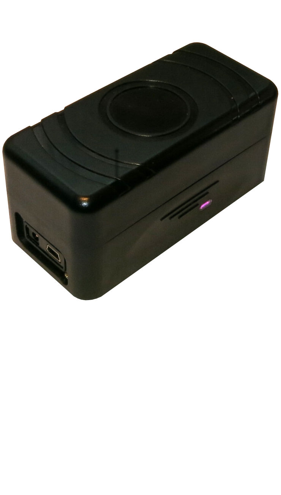

Xtreme GM7 GPS Tracker Daemon

Manual RA15 (For daemon v3.2.0)
Copyright © 2013-2015 Johan Persson
Table of Contents
- 1. Preface
- 2. Overview - Release history and roadmap
- 3. Introduction
- 4. Installing
- 5. Running the daemon
- 6. The command shell - "g7sh"
- 7. Connecting the device
- 8. Controlling the device using commands
- 9. Receiving data
- 10. Exporting the DB
- Appendix A. Configuring the daemon
- Appendix B. Troubleshooting
- Appendix C. Command reference
- C.1. Device Command reference
- C.1.1. address
- C.1.2. batt
- C.1.3. clrec
- C.1.4. comm
- C.1.5. config
- C.1.6. dlrec
- C.1.7. gfevt
- C.1.8. gfen
- C.1.9. imei
- C.1.10. led
- C.1.11. loc
- C.1.12. locg
- C.1.13. lowbatt
- C.1.14. mswitch
- C.1.15. nrec
- C.1.16. phone
- C.1.17. ps
- C.1.18. reboot
- C.1.19. rec
- C.1.20. reset
- C.1.21. roam
- C.1.22. sens
- C.1.23. sim
- C.1.24. sleep
- C.1.25. sms
- C.1.26. test
- C.1.27. track
- C.1.28. tz
- C.1.29. ver
- C.1.30. vip
- C.2. Database commands
- C.3. Preset commands
- C.4. Server commands
- Appendix D. Technical information
- Appendix E. References
- Appendix F. Detailed release history
- Appendix G. Backlog
This is a short guide through a particular software that interacts with a technology that almost seamlessly has seeped in to our daily life in a way that very few could have predicted even just ten years ago. Satellite position technology is probably one of the most sophisticated and advanced technologies in common use today. It builds on a theoretical framework so complex that there is no single person that knows all the necessary technology in its entirety. The particulars are head spinning even for those of us that claim technical expertise in small parts of the system. Yet, this human feat of science and engineering is in use by ten-year old´s to find there friends or by their parents making sure the kids is safely home after school. A truly remarkable achievement but not without risks as we shall see later on.
As a child I remember seeing a movie where the hero was chasing the bad guys from a distance by looking at a blinking dot on green phosphorous screen (although I didn't know it was phosphor at the time) and I was entirely convinced that such technologies were in the hands of the "spy world". Unfortunately that was not true, it was only film-magic. The technology available at that time (even for spies!) did not make such a device practically possible. The only distant positioning technology at that time was through radio-triangulation (or radar) like what was later used and in fact enforced by commercial shipping, the Decca system, which was eventually shut down in the early 2000.
It is only in the last couple of years that such - once film-only-magic technology - has become available as a consumer product by combining different technology strands into one unit. In fact a modern GPS tracking device is the successful merge of three major technology tracks. The satellite navigational system, the digital radio communication (made financially possible by the mobile phone explosion) and the internet and its use of a packet switching network based on the TCP/IP protocol stack. The development of these three technology tracks together with its supporting technologies has literally made use of much of the science and engineering progress made in the last three hundred years. Specialist mathematical areas like Galois theory and BCH error correcting code made reliable communication possible, the relativity theory told us how to compensate when talking to satellites, chemical and physical engineering pioneered in the 19:th century made it possible to construct everything from batteries to rocket fuel and more.
Most people do not think about such thing when checking Google Maps for how to find that special café in Paris which their favourite magazine recommended (only to discover that they were not the only one reading that recommendation). Neither should they, but I cannot personally help wonder how it comes that those of us working in research and science have done such an utterly poor job of marketing. Asking any person on the main street over the age of thirty it is a very high probability that he or she has heard of people like Hemingway, Jean-Paul Sartre, Doris Lessing, Lord Byron, Edgar Allan Poe, Yates and other humanists and writers even if he or she has never read anything by these authors.
However, if asking the same question but replacing the names with the likes such as Sophus Lie, Niels-Henrik Abel, Emmy Noether, Alexis Hocquenghem, Leonard Euler, Carl F. Gauss or Dennis Ritchie very few (if any) have ever heard of them. One of the few exceptions is A. Einstein but then mostly as a caricature of a an absent-minded old professor in gray hair.
I find this asymmetry sad.
While Hemingway without doubt wrote some great books he has not had the impact on the everyday life of people in any way that comes even close to the way the latter names have had (without most people knowing it).
Coming back to GPS technology and its rapid commoditization actually poses a risk that few people are fully aware of. The rapid fall in cost (after the GPS system was released to the civil market by the US military - but only after congress threatened to kill of the entire program due to cost) has tempted many manufacturer to replace older proven technology with cheap mass-market GPS receivers in places not easily guessed. So was the fact for example when the British navy commissioned a ship that specifically should be fully functional with no GPS. During the tests when the GPS signal was jammed their sonar suddenly stopped working. It turned out that the manufacturer of the sonar equipment had made use of a GPS receiver inside the sonar (which nobody had thought of) since it was so cheap that they practically got it for free.
It is therefore worth giving some thoughts about the risk of satellite communication and the dependency we as a society in a very short time has built up on this technology. Even though getting the wrong position from an alarm in your stolen car is not helpful it is unlikely to be a life and death situation either. However, a false position for an airplane in mid-air flight can cause some fairly interesting situations most people want to avoid.
What you first realize looking a bit deeper into satellite navigation is that this is a scaringly fragile technology. With equipment that can (almost) be purchased at the closest Wall-Mart for the cost of a better dinner you can interfere with equipment worth billions of dollars. The current GPS system was never truly designed to be a technology able to robustly run the world to the extent we now have come to rely on as the following two recent stories illustrates.
In 2011 Newark airport in the USA experienced sporadic problem with their GPS system to the extent that it was forced to divert airplanes to other airports or put them in long holding positions until the airports GPS system was back online (and double checked). The technicians and the manufacture spent months of trying to pinpoint the problem without success. The problem was randomly occurring and no pattern could be discovered. As the suspicion of sabotage grew the police was contacted and a massive surveillance operation was put in place to discover any outside influence of the airport system. The problem continued but no unauthorized personal was discovered. As a last resort the team set up cameras on the highway outside the airport and started filming all cars driving there. After a couple of months with some more disturbances the police started a painfully detailed analysis of the films in the hope of detecting some patterns correlating with the disturbances.
The pattern was found. With the films it was clear that a specific truck had been driving close to the airport every time the GPS signal was lost. The police concluded that this was deliberate sabotage and set up a massive operation to intercept the presumed terrorist(s). After some time the same truck was spotted and the truck was forced to stop and the driver immediately detained (with some mild persuasion we can assume).
So what had happened, was this in fact the work of domestic terrorists? No, not at all that exciting, the truth was much more mundane. The driver was working for a company that had put in GPS tracking devices in all its trucks. Furthermore the drivers were told not to drive there trucks home and keep to recommended routes and speeds. This particular driver did not like that policy and that the owners wold be able to see exactly how and where he had been driving and as a result he had purchased a $99.99 GPS jammer so he could drive his truck without the company knowing exactly where and when. Without him knowing it the jammer was more powerful than he realized so that whenever he was in the vicinity of the airport the jammer also interfered with the highly sensitive equipment in the airport.
In this story the driver obviously had no malicious intent towards the airport and he was later released. However that is not always the case.
The airport in Soul - South Korea - did experience problem with the traffic systems GPS in april-may 2012. Investigations (and satellite surveillance) concluded that directed GPS antennas had been constructed in North Korea in the Kaesong area (only ~10km from the border). The construction had no other discernible purpose than to interfere with the GPS in the airport in Soul. This is black mail on large scale and there is absolutely nothing (legally) to do about it.
So even if the GPS tracker makes for a great anti-theft device for the average "joy-rider" you should probably not just yet throw away your lock and key. It might still be a good idea to teach our kids how to use a map & compass and not just trust that Google maps will always be available (or accurate)!
Happy tracking!
Johan Persson
@ N 59.655070, E 14.867005
August 2014
(Third printing may 2015)
I would like to express my gratitude to GPSER Sweden AB (http://gpser.se/) who provided the details of the GM7 communication protocol without this project would not have been possible.
For a more detailed functional description of past and future releases please see Appendix G.
Note
Version numbers indicate magnitude of change and compatibility as follows:
x.y.z -> x.y.(z+1)Maintenance release (defect or optimization fixes). No change in public interface, feature set or file/DB formats or locations. Safe upgrade without user intervention.
x.y.z -> x.(y+1).zNew functionality. API compatibility maintained. Safe upgrade but user might need to learn new functionality to take advantage of release. Limited changes in DB/File format as well as configuration file is possible.
x.y.z -> (x+1).y.zMajor new functionality. API compatibility is not guaranteed. Any type of changes in external API, file or DB format. May require a complete upgrade of config file and existing DBs.
Only rmajor new functionality is listed here.For a complete list see the NEWS file (Appendix F)
- v3.2.0 (May 2015)
Adds option to include miniature maps in the various event mails that shows the location. Also introduces throttling of Google API call to avoid hitting the rate ceiling for anonymous call to Google. A notification mail is now sent when the 24 hour limit has been reached and further lookups are disabled until the 24 time period has expired, the daemon restarted or the ".ratereset" command given. Some Improvements in handling of UTF8 characters have been added and pretty-printing of tabled output introduced (see the ".table" command, .table). A few more DB commands (db head, db tail) and some minor bug fixes. Configuration file modified by adding possibility to set a Google API key and moved the port settings to the "startup" section. Improvements of the dlrec command and some general documentation updates. Security audit for string routines and a complete Coverity check. The communication with command shell was improved to be able to send larger amount of data without truncation.
- v3.1.0 (Mar 2015)
Make it possible to connect multiple devices and select which one to direct commands to. This release also makes it possible for each connected command client to individually select which device to direct commands to. One more highlight is the possibility to enter non-interactive commands via the newly introduce "@@" command (See Section 8.1.1)
- v3.0.0 (Jan 2015)
Changed location of all data files to fully adhere to FHS (File Hierarchical Standard). Added several command line options for starting the daemon. Several internal changes in how the processes and locking is handled. Changed configuration file content. Some minor bug fixes.
- v2.2.0 (Sep 2014)
Added reverse Geo-location address lookup to map coordinates to approximate street addresses. In addition this release adds improved support for Apple OS X as well as more robust USB connection handling. The build system for documentation was also overhauled to improve documentation build capability on most common Linux variants as well as Apple OS X. The DB schema was also slightly updated to include the approx street address. In addition some minor defect fixes has been included as well as a security scan of the source base using coverity static code analysis.
- v2.1.0 (Mar 2014)
This version adds full support for communication to the device over GPRS as well as a number of internal improvements and documentation updates.
- v2.0.1 (Jan 2014)
Major DB schema improvements to increase download speed of stored location on device. Added registering of devices and giving them nick-names, commands for handling geo-fencing and geo-location events was added. GPX export improved with support for identifying tracks. On the server side it is now possible to list more information about connected clients. The command shell was updated with improved handling of long running commands (like location download). Documentation update and some minor defect fixes for corner cases.
- v1.0.1 (Jan 2014)
First public release
In general the daemon is expected to initially have three to four public releases per year. However as it is also expected that as the product matures the updates will become less frequent. If critical issues with security implications are found then intermediate maintenance releases will issued. The daemon is considered stable with all planned features implemented. Future devlopment will primarily focus on making it easier to connect to the daemon from third party clients such as new Web clients or mobil clients
- v4.0.0 (TBD NON Committed)
Add a Web services interface and JSON response to allow easy connection from web- and mobile clients. Most likely this will technically designed with a bundled HTTP server (albeit running as a separate process) to reduce the need to configure an external web-server to talk to the daemon.
From 3.x.y
The configuration file should be refreshed from the distribution. Then it is safe to only replace the binaries since there is no change in data formats in any other files or change in file locations.
From version 2.x.y and earlier
Due to the change in config files as well as locations of data files any older versions needs to be completely uninstalled before attempting to install this version.
This software is meant to be used together with the Xtreme GM7 GPS tracker to help simplify its management and to make it possible to monitor alerts sent by the tracker.
The software is intended to be run as a GNU/Linux service (a.k.a. a daemon) that always runs in the background. The server has a small footprint and makes very little use of system resources. It should therefore be possible to run the daemon unnoticed and on virtually any GNU/Linux systems.
In the rest of the manual we will often refer to the software as "the daemon". The application name for the daemon is "g7ctrl"
The manual is consistently formatted to help differentiate the semantic meaning of the text as follows:
Terminal text input/output. Example:
g7ctrl> command-line
File- or directory name. Example:
/usr/bin/g7ctrlFile listing. Example:
# This is the first line in the file # and this is the second line
Literal text: Example:
SIGHUPAcronym. Example
SMTP
Inline code. Example:
main(int argc, char **argv)Command. Example
useradd
Product name. Example
Xtreme GM7
While it is possible to manage the GM7 GPS Tracker (commonly referred to as "the device" in this manual) through the means of sending phone text messages this is often awkward since it requires the user to remember specific commands and the corresponding arguments. At best this is a complex and tedious way to control the device. In addition there is also a cost associated for sending each text messages both in the sending phone and for the SIM subscription in the device since the tracker will normally will send back a reply. Even when the cost in itself is not of concern the risk of emptying the device SIM account increases and Murphy's law will guarantee that the SIM will be empty when it is the most needed.
An alternative method of control is to connect the device via a USB cable to a computer and send control instructions that way. This way the device can be set up in the wanted way and then be used, for example, as an alarm. This software will help to set up such a connection and allow the user to send command in meaningful English with a clear question/response based command language that do not require the user to remember an awkward syntax or the order of arguments. The drawback of this method is obviously - the device needs to be in physical proximity of a controlling computer.
To simplify command handling it is possible to group commands together and give them a meaningful name as a user defined function. This could for example be used to set up a device to enable GPRS and start tracking using TCP/IP back to the server when the device is moved or disturbed with a single command and not having to remember any details or arguments. This is described in more detail in the section on presets (see Section 8.3)
The software can further more act as a recipient of location updates from the device (when it is put in tracking mode) sent over a GPRS link. Each location update is stored in a database which later on can be queried or exported in a number of different formats and can for example be shown on Google maps or similar programs (see db export).
The location points can also be used to calculate the approximate distance travelled over any given time or show all locations where a given speed is exceeded (see db dist).
One requirement to enable the device to send back location updates is of course that the device can contact the server. This will require the server to be accessible from the internet, and hence its IP address must be known.
In a professional setting this is in general not a problem since most likely the ISP subscription is such that a professional server is assigned a static IP address that will remain fixed.
However, most home user connect to the internet via a router/access point provided by
their ISP and this access point most often have a dynamic
IP address. This means that the ISP can and
will change this address at will (even though in practice, the assigned address tends to
stay the same for long period of times). Therefore it is not possible to store this
address once in the device and always count on it to work. The best way to solve this is
to register with a dynamic domain name server (DDNS) which keeps
track on your assigned IP address. The device will then use the
DDNS name assigned by the DDNS service and
will get the corresponding IP address.
It is out of the scope of this manual to give instructions on how to register your server (or more correctly your access point/router) with a DDNS service (there are both free and subscription based alternatives). Many routers/access points also has built-in support to automatically update a specified DDNS service when their IP address changes.
Please remember though that connecting to this address only gets as far as the access
point. If you have one or more computers that uses that access point you need to
forwarded the connection to a specific server where you have the daemon installed. How
to do this is dependent on the particular router/access point you are using but most
likely it will be found under a menu named something like "Port
forwarding". There you need to instruct the access point/router to
forward packets arriving on port 3400 to your server. This is the
default port number used by the daemon to receive location updates from the device (the
port number used is also configurable, see Appendix A)
One key usage of the tracker is to act as a an alarm for all kinds of vehicle and large equipment. When the alarm conditions (specified by the user) are met the device will normally send a text message to one or more predefined phone numbers and can also have been setup to send a message over a GPRS link. In order to increase the chances that the alarm reaches the user the daemon can be set up to also send a mail on such event to one ore more predefined mail addresses.
The daemon can also be setup to execute user specified action when it receives a specific alarm from the tracking device. This could for example be used to give audio/visual indication that an alarm has been triggered.
Tip
An easy way to give visual indication of alarm is to purchase a USB controlled warning light (such as http://www.delcomproducts.com/productdetails.asp?ProductNum=890604) and use a small event script to control this light.
In principal anyone - once the daemon has been installed and configured. We should however differentiate between the two roles of the administrator (the person installing and configuring the software) and the end user (who uses the configured software to communicate with the device).
The role of the administrator.
Configuring and using a GPS tracker requires, almost by definition, a certain technical maturity and the same goes with this control daemon. It is a medium complex piece of software that requires the person installing and configuring the software to be familiar with concepts such as terminal usage, TCP/IP ports, GPRS configuration, file handling and mail setup (specifying an outgoing SMTP server).
Unfortunately this can seem like a daunting task at first and unfortunately the software can only do so much automatically since it cannot know the ISP or what SIM card is used in the device are using or the necessary SMTP setup. Nevertheless, the daemon comes with a reasonable default configuration that tries to make the setup process as easy as possible given the overall complexity and clearly indicate the data that must be updated.
An administrator should specifically shield the end user as much as possible from the technical details which for example can be done by providing a good set of defined presets (see Section 8.3)
The role of the end user.
An end user will most likely only ever make use of the command line interface (g7sh) to send and receive data from the device. He or she therefor needs to be aware of the available commands as summarized in Appendix C (eventually the daemon will also incorporate a WEB-based UI).
The distribution comes with the following documentation
The Software Manual. The document you are currently reading, contains both end user and administrator information.
A Unix man page for the daemon "
man g7ctrl". This is installed together with the daemon.A Unix man page for the command shell "
man g7sh". This is installed together with the daemon.
In addition to this end user documentation there are developer documentation in the
source tree at appropriate locations such as schema description of the database and
various README files. For developers the repository also contains a
set of Doxygen generated documentation for the source (this is
however not included in the distributed tar-ball since it is of no
use to an end user).
Below is a high level overview of what functionality this software offers. A more detailed description of all commands and functionality is available in the command reference section (see Appendix C).
Handle communication with the device over a USB cable to both control and query the device. The commands set supports the complete internal command set understood by the device.
Act as a control center that receives automatic location updates from the device and stores them in a database. To have this functionality the device must first be setup to send data over a GPRS connection to the server.
Control the device over TCP/IP when the device has an active GPRS connection. This allows controlling the device remotely without having to use text messages. This can also allow predefined actions to be performed on the device when certain events occur.
Exporting the stored location data to several popular geo-location file exchange formats such as GPX (GPS Exchange Format) or KML (used by Google Earth).
Calculate the traveled distance for a set of locations.
The control center can send mails to one or more predefined addresses one certain events such as alarms or notifications.
Send mail with attachment of exported (and compressed) track data. This makes it easy to immediately gain access to tracked location even if the server will not allow outside access to read an exported file.
Get regular mail updates on the status and location of the tracker
The ability to execute user specified functions on defined events received from the device
Remote access to the daemon over a TCP/IP link. This could allow an administrator to configure a device remotely for a co-worker with no detailed technical knowledge of the device using the full functionality of the software.
Setup predefined command sets to control the device
Ability to run user defined scripts as reaction to received tracker event such as alarms which for example could be made to have the computer sound an audible alarm.
This lists known omissions and limitations in the current version. Some limitations might be lifted in future versions of the software.
Note
Dates are always specified in European format:
YYYY-MM-DD HH:MM:SS
The daemon always assume PIN code on device is "
0000"The daemon only supports TCP/IP connections from the device and not UDP. In practice this is no limitation but should be mentioned for completeness.
Live tracking of location event over USB is not supported and there are no plans to support this use case. Tracking must be done either to the server (over GPRS TCP/IP) or logged to the device internal memory and then be downloaded over USB. See Section C.1.6
The included shell (g7sh) for managing the daemon has a buffer limit on 1MB of data to be received from the daemon. The only use case when this is a limit in practice is for a user needing to do a "db head" (or "db tail") and display more than around 10,000 rows from the DB.
Applies only to OSX builds:
OSX does no longer ship with GNU readline but with BSD libread (for licensing reason). Unfortunately the replacement library has (very) limited functionality compared to the "original" and gives a poor working line editing experience. For full functionality on OSX for the command shell please install the GNU readline library. An easy way of doing this is to use the "Homebrew" system (see http://brew.sh) which is an easy way to install multiple native UNIX utilities and libraries. The configure will assume that the GNU readline library, if available, is installed to "
/usr/local/opt/readline".Connecting a device over USB should be considered an experimental feature on OSX. The USB connection with devices can sometimes fail to be established. So for working with USB connected devices a Linux system is strongly recommended since on Linux USB connections is both stable and reliable.
The software is copyright 2014-2015 Johan Persson and released under the GPL 3 license to ensure the full distribution and freedom (as in free speech - not as in free beer) . See http://www.gnu.org/licenses/ for more information.
This program is free software: you can redistribute it and/or modify it under the terms of the GNU General Public License as published by the Free Software Foundation, either version 3 of the License, or any later version. This program is distributed in the hope that it will be useful, but WITHOUT ANY WARRANTY; without even the implied warranty of MERCHANTABILITY or FITNESS FOR A PARTICULAR PURPOSE. See the GNU General Public License for more details. You should have received a copy of the GNU General Public License along with this program. If not, see <http://www.gnu.org/licenses/>
Tip
There are pre-built binary packages for OpenSuSE 12.1 - 13.1 (both in RPM and One-Click-Install) available from http://software.opensuse.org/download.html?project=home%3Ajohanp_aditus&package=g7ctrl
The software is designed to work on a GNU Linux derived system. It has been built and verified on the following systems and versions:
OpenSuSE 12.3, 13.1
Linux Mint r15, r16, r17
OS X Maverick 10.9 (Experimental support only - g7sh has limitations and requires GNU readline for full functionality, see Section 3.6)
The daemon will specifically not run on any variant of MS Windows nor will it ever be ported by the author to any variants thereof.
Even though the daemon is only tested on these versions it will most likely build fine on most recent GNU Linux distributions. It does not make use of any special code, tricks or requires special libraries. In order to compile the software a supported C compiler must be used. As of version 2.0 the following compilers are officially supported:
gcc,v4.6.x, v4.7.x & v4.8.x
clang, v3.2
In addition the daemon need three utility libraries to build. The build configuration will check for those libraries and if they are not found an error message is shown on exactly what library is missing. For current version of the daemon the following external libraries are needed for a successful compilation.
libpcre3libsqlite3libxml2
In addition, if your system has libiniparser library the build will
also use it and if it is not available a built-in version will be used. In order to
compile with the needed libraries the development version of each library (usually named
with a "-devel" or "-dev" suffix) must be
installed.
Warning
Please make sure that the Tracker firmware is M7 2.007 GP rev00c or later. With the daemon installed and the device connected you can easily verify this using the command get ver
Even though the process of installing the daemon ideally is as simple as typing three commands it is inevitable that different systems and variants behave differently and it is impossible to test the software build on all possible configurations "in the wild". While the software is configured to handle most system differences automatically there will always be corner cases that will require some minor adjustments to get the software working on that particular system. Unfortunately that requires a bit of experience.
It will be helpful if you previously experience running configure and make. The commands
> ./configure && make sudo make install
is a standard way of compiling and installing Unix/GNU Linux software
based on the GNU
Automake tool chain (which is a fantastic piece of
canned black magic and years of experience). With default configuration the daemon will
be installed in /usr/bin and the configuration directory will be
set to /etc/g7ctrl. If you would like to install the daemon in
other places, for example under /usr/local/bin, then configure the
daemon using the --prefix argument as
> ./configure --prefix=/usr/local && make sudo make install
If you are not comfortable with this process or have never done this before it is recommended for you to use a pre-compiled package for your particular system.
Tip
If a package does not yet exist for your system please consider requesting a package to be provided from the people responsible for your distribution.
For technical reason having to do with the way the autotools work the installation
does not enable the daemon as a service. If you want to have the daemon run as a
systemd service execute the following line after you have done
the standard make install (still as root)
> systemctl enable g7ctrl.service
This will enable the g7ctrl service with systemd
in multi-user mode.
The distribution comes with pre-rendered versions of all documentation in both plain text, HTML and PDF format.
The documentation is written using the Docbook 5 XML schema which is a very good way to build multi-mode documentation. However, rebuilding the documentation (perhaps you want to add some section or have found one or more spelling mistakes that irritates you) requires a fully working Docbook 5 environment.
While this is certainly possible Docbook5 and
XML transformations might not be everyone’s coup of tea. if you
are not used to the XML transformation process it can be a certain
learning step. The configuration process will investigate your system if it has the
capability to render all or some of the output formats and state that information at the
end after running the "./configure" script.
Tip
An easy way to get a fully working Docbook5
setup is to check out the source directly from the repository and run the
bootstrap.sh script. This will re-create a full build
environment for the daemon. See Section 4.6
Using the tar-ball installation is the recommended way for most end users (compared to getting the source directly from the repository) since the tar ball has pre-built configuration environment and pre-rendered documentation. After downloading the tarball (please use the latest version available at the time of download) it needs to be extracted to a temporary directory where it can be compiled.
Assuming you have downloaded version 3.0.0 the commands to extract the source is first
> tar xzf g7ctrl-3.0.0.tar.gz
or if you downloaded the ".xz" version (which is in general smaller
but requires the xz-compression program, which makes use of the more
efficient LMZ2)
> tar xJf g7ctrl.3.0.0.tar.xz
In order to then configure and compile the sources (using default settings) do the following:
> cd g7ctrl-3.0.0 ./configure && make -j8
(the -j8 is strictly speaking not necessary but will speed up the
compilation a bit through parallelization) If some of the necessary prerequisites are
missing (like one of the required libraries) an error message will be given. Install the
required library and run the commands again. Once the compilation process is done the
daemon needs to be installed. This requires root privileges. To
install the daemon do the following
> sudo make install
By default the installation process will install the binary in
/usr/bin, the configuration file in
/etc/g7ctrl and the database in
/var/lib/g7ctrl. The exact location can easily be changed by
using the "--prefix" argument to "configure". For
a complete list of options at configuration time please run
> ./configure --help
If your are planning to do some development of your own or just want to follow the development of the daemon more closely than waiting for official releases you can set up your own local copy of the repository. However, this is only recommended for developers with previous experience with medium complex software. Specifically you need experience with the subversion SCS since that is what the repository uses.
To help setup a full build environment including the
Docbook5 environment with this there are two utility
script in the bldscripts directory which when run will
automatically set up a complete build environment including a working
Docbook5 environment. The two included bootstrap scripts
are
bootstrap.shUsed for RPM based system like OpenSuSE
bootstrap-deb.shUsed for PKG based system such as Debian, Ubuntu or Linux Mint
The bootstrap script are only meant to be run once after the initial checkout.
If you are on a Debian based system the following two steps are all that is needed to both checkout and setup a complete build system
> svn co http://www.sourceforge.net/p/g7ctrl/trunk g7ctrl
> cd g7ctrl
> ./bldscripts/bootstrap-deb.sh
and if you are on a OpenSuSE (RPM) based system use the following steps
> svn co http://www.sourceforge.net/p/g7ctrl/trunk g7ctrl > cd g7ctrl > sh ./bldscripts/bootstrap.sh
The bootstrap script will install all required pre-requisites including GNU autoconfig and automake tools. If no errors were found you should see the following information on the screen.
Build environment is ready. Now run autoreconf You can now run "./stdbuild.sh" to build the daemon and then then run "./mkrelease.sh" to create new releases.
Now run the autoreconf script in order to recreate the
GNU autotools setup. After that you can proceed as usual to build
the source.
Note
Please note that you will not have the ability check in changes to the code base by default. To get permission you need to show that you have a substantial contribution and demonstrated clear knowledge at the level required to comprehend the code base. If you believe you meet this requirement contact the author via email stating your request. For more technical information on the source tree please see Appendix D
For development there are two additional configuration parameters that can be given to the configures process.
--enable-simulateThis will allow the execution of commands even though a real device is not connected. Note that if this is enabled the daemon will never be able to communicate with a real device!
--enable-stacktraceThis will instrument the build so that in case of a
SIGSEGV(orSIGABRT,SIGBUS) a limited stack trace will be written to "/tmp" to facility debugging. It is also recommended that the system is setup to allow for full core-dump in order to help with the post-mortem debugging. The stack trace is however useful to help analyze a fault at an end user where he/she can mail the stack trace back to the developer for analyze. Ideally a watch daemon should be added to the system that will watch the/tmpdirectory for a stack trace and in that case offer the end user to automatically mail the trace (and mini-dump) back to the developer.Note
--enable-stacktraceis not supported on OSX/Darwin due to reliance on specific GNU Linux system libraries (stack-walking) and will give a configuration error if enabled on OSX.
After a successful installation the daemon needs to be configured. This is done by adjusting the configuration template file. The first step is to switch to root and then use the template provided to create an initial configuration file. Assuming the configuration file is installed in the default directory start by doing the following:
> cd /etc/g7ctrl > sudo cp g7ctrl.conf.template g7ctrl.conf
The next step is to open the configuration file in your favourite editor and adjust a few settings in accordance with your preferences and system. There are very few settings that you absolutely have to adjust. Depending on your needs and setup you should as a minimum review the following settings:
SMTP mail server.
If you intend to use the mail functionality of the daemon you need to state the name of the SMTP server and your credentials (user and password)
Listening ports
Reviewing what ports the daemon is listening on from command and device connections. By default the daemon will listen on port
3100for commands and on port3400for incoming events from the tracking device such as alarms and location updates. The ports can be any number but it is recommended you keep the port range in the range[1025-9000]unless you really know what you are doing!Connection password
In order to make a command connection to the daemon password must normally be given. By default the build process will create a random 6 letter password in the configuration file. You might want to change this to better suit you environment. If you only intend to have the daemon reachable from your local computer network (and not have the command port open to the entire internet) you might turn off the password to avoid having to type it whenever you want to connect the daemon.
However, if you have the daemon accessible from the internet you really, really should have it protected by a password of minimum 8 characters in length. However since the communication is done in plain text it is susceptible for line listening. For a secure communication the command shell should be configured as a login shell so that the communication can easily be done over a encrypted link, more details are available in Section 6.
All settings in the configuration file is described in more details in Appendix A.
Once installed it is time to start the daemon. This can be done in a number of ways as the following sections will show.
While strictly speaking not necessary the server should normally be started by the
root user. As soon as the server doesn't need
root privileges it will switch to run as the user specified in
the configuration file, by default this is the user g7ctrl if the
configuration file has not been changed. This user should for security reasons not be
the 'root' user. This user should be a system user without login shell. Such a user can
normally be created by running the command 'useradd'. (If the
daemon is installed via the RPM package this user will be automatically created).
If your system supports the command useradd then start by changing to root and add the user as so> useradd -r g7ctrl
Note
The user created must normally belong to the group dialout
on most system in order to have access to the USB-serial
device.
Then to start the server as root using the default settings the simplest way is to just call
> sudo g7ctrl
In order to stop the server and allow it to do a clean shutdown the
SIGINT (or SIGSTOP) signal should be sent to
the process running the server (assuming g7ctrl has been started as a
daemon). The distribution includes two support scripts to help with this. This can of
course also be done manually as (and reading the pid number from the standard
pid-file)
> sudo kill -SIGINT `cat /var/run/g7ctrl/g7ctrl.pid`
Please note the "`" backward slashes.
While testing the server it is also possible to start the daemon as a "normal" user. As a test start the daemon from command line for example as
> g7ctrl -dN -V3 -lstdout
The commands will start the application on the terminal -dN (not as a
daemon), with maximum logging (-V3) and print the log file directly to the
terminal (-lstdout). This is a good way to do the initial testing since
any problem can usually be quickly seen in the log. Note that when the daemon is not
started as the root user it can not switch to the daemon user specified in the
configuration file.
Once the testing is completed the daemon can be setup to be started at the same time as the server. Depending on the system this can done in a few different ways as the following two sections show.
To start the daemon automatically the installation will install two utility scripts.
The first script will be installed in "/etc/init.d/g7ctrl" and
follows the normal guidelines for a "init.d" service start/stopping
script according to LSB (Linux Standard Base). Using this script to
start the server is then simply a matter of calling
> sudo /etc/init.d/g7ctrl start
(or its alias rcg7ctrl) is given. The start-up script also supports
the "restart" and "status" options.
If the server gives the error message : "Server can not be started. See
system log" then more information about the details of the problem can be
found in the system log, normally /var/log/messages. The most
common reason for this message is that the daemon is already running.
To stop the server give the command (as root)
> sudo /etc/init.d/g7ctrl stop
Since the init.d system has been abandoned in most modern system
the init.d scripts will then be automatically redirected to the
corresponding systemd service. In that case it is better to just use
the systemd service directly as the following section shows.
If your system makes use of systemd then the second utility script
will be installed as a systemd service. The configuration script will
automatically figure out if your system supports this. In this case the daemon can be
directly controlled via the usual systemctl command as whown below.
See man systemctl for details.
> sudo systemctl stop g7ctrl.service
> sudo systemctl start g7ctrl.service
Note
The g7ctrl service needs to first be enabled after the
initial installation with
> sudo systemctl enable g7ctrl.service
If your system does not have the command systemctl then it is not
using the systemd setup.
Newer version of Debian and Ubuntu now uses "upstart" to manage
daemons. The build system fylly supports this and after the usual "sudo make
install" the daemon could be controlled by
> sudo start g7ctrl > sudo stop g7ctrl > sudo status g7ctrl
or alternatively by
> sudo service g7ctrl start > sudo service g7ctrl stop > sudo service g7ctrl status
Note
The configuration files a restored in
/etc/init/g7ctrl.conf
Note
Upstart will be deprecated by Ubuntu from around 2016 and support for this will officially end with the release of version 4.0.0
Command line argument will override the corresponding settings in the configuration file. The daemon supports the following arguments in short and long format:
- -d [n|y], --daemon=[n|y]
Detach the program from the controlling terminal, a.k.a. running as a daemon
- -h, --help
Print help
- -i file, --inifile=file
Use specified file for configuration
- -l logfile, --logfile=file
Specify the name of the logfile. A special value of "
stdout" can be used to print directly to terminal- -p n, --cmdport=n
Specify TCP/IP port number for command listener
- -s n, --stty=n
Specify what
ttyACM<n>device to use when connecting over USB to device- -t n, --trkport=n
Specify TCP/IP port number for receiving tracker updates
- -V n, --verbose=n
Specify verbose level for logging. 1=Show warnings and errors, 2=add notices, 3=add debugging output
- -v, --version
Print version information and exit
- --pidfile=file
Specify PID lock file to be used. By default this is
/var/run/g7ctrl/g7ctrl.pidso if the daemon is not started as root it must be specified since only root has access to/var/run.- --datadir=directory
Specify directory for static data files (default,is
/usr/share/g7ctrl) that are shipped with the daemon.- --dbdir=directory
Specify directory for dynamic data files (default,is
/var/lib/g7ctrl) the dynamic data files currently used are the database and the cache file for retrived address lookup from coordinates.
The default settings in the distribution corresponds running the daemon as
> g7ctrl -i "/etc/g7ctrl/g7ctrl.conf" -d Y -s 0 -p 3100 -t 3400 \ -l "/var/log/g7ctrl/g7ctrl.log" V 2 --pidfile="/var/run/g7ctrl/g7ctrl.pid" \ --dbdir="/var/lib/g7ctrl" --datadir="/usr/share/g7ctrl"
Tip
Since the configuration file at installation time specifies that the
connection to the daemon is password protected you most likely need to look at
the configuration file (/etc/g7ctrl/g7ctrl.conf) to confirm
(or change) the password currently in use.
Once the server is running an easy way to connect to the server is by using the
'nc' (net-cat) command this allows connecting to a specific port
on any named server. Assuming that the g7ctrl server is running on
localhost the following command will connect to the daemon (assuming the default command
port 3100 has not been changed in the configuration-file (e.g.
/etc/g7ctrl/g7ctrl.conf) or by a command line argument).
> nc localhost 3100
After a successful connection the server will reply with a short information message. The full returned information message at the connection time should look something similar to the following (the version and build numbers might however differ):
GM7 Server version 3.0.0 (build 150109-13)
If password protection (see Section 5.7 ) the welcome message is not be shown until the correct password has been specified. Instead when password protection is enabled the connection sequence looks like this
> nc localhost 9300
Password:xxxxxxx
GM7 Server version 3.0.0 (build 150109-13)
This means that the correct server password has to be given before the welcome message is seen. The server is now ready to accept commands on this connection.
To test the server you could for example give the internal server command
".ver" (please note the "." at the beginning!)
which will again prompt out the version of the daemon.
To disconnect to the server just type 'exit'
Tip
The best way to connect to the daemon is to use the supplied command shell "g7sh" which supports full editing and history as well as knowledge of the daemon command protocol to make it a more pleasant experience than connecting "raw" to the daemon of the TCP/IP socket.
A final check is to simulate an active tracker that connects to the daemon. You should
use this to verify that all setups are correct and that you receive an event mail.
This is done by using the "nc" command to send a "fake" location
update to the dameon in the saem manner as the tracker does. The following commadn
line assumes that the utility program "nc" is installed and that
the command is issued on the same server as where the daemon is running (otherwise
just replace "localhost" with the proper server address.
> printf "3000000010,20131211002222,14.959445,53.366545,0,0,0,0,34,3.99V,0\r\n" | \ nc localhost 3400
The command above will simulate an active tracker with ID
3000000010 that sends the "Wake up Event".
If the daemon configuration is set to send mails you should now check that you have
received the event mail after a short while.
If this does not work as expected then look at the log file (normally
/var/log/g7ctrl/g7ctrl.log) for clues why this is not
working..
In order to prevent unauthorized access to the server the server have a basic plain-text password protection. This means that a password can be configured to be used before a client can start giving command to the daemon. The password is set in the configuration-file.
The setting whether password should be used or not and the actual password is specified in the configuration-file.
The configuration uses the same password for all clients. Since the password is stored in plain text format the configuration file should have restricted access.
This should not be considered strong security but rather a weak "stop-messing-with-my-tracker" protection. At configuration time the password in the configuration file is set to a random 6 character long password.
After connecting to the server when the password has been enabled the first string sent back from the server will be the single string:
Password:
The rest of the reply is the same as when no password is used. After three failed attempts the daemon will disconnect the client.
For a more secure access to the server the g7sh command should be setup as a login shell (or logging in to the server remotely using ssh or mosh). For more information see Section 6.
To maintain maximum flexibility the daemon will check for the existence of several (optional) shell scripts that can be provided by the user to take special actions on certain events such as that the tracker reports movement. These shell scripts are initially null scripts and does nothing.
The scripts are stored in "/usr/share/g7ctrl/scripts/". For more
information regarding these event scripts please refer to Section A.4.
Tip
These event scripts can for example be used to play an alarm sound when the daemon receives an alarm event.
The supplied command shell offers the easiest way to control a device and the daemon. The shell can be run on either the same server that is running the daemon (the most common case) but it is also possible to run the shell on an arbitrary computer as long as TCP/IP connection can be established to the server running the daemon.
If no command line arguments are given the shell assume that the daemon is running on the same machine and tries to find the daemon configuration file and read the settings from there.
To run the command shell from a different computer it is required to add command line arguments that specifies the server name and optionally what port the shell should connect to.
The shell support the following command line arguments
- -h, --help
Print help and exit
- -p
nnn, --port=nnn What command port to use (by default 3100)
- -s
<address>, --server=<address> The address of the server to connect to either as a domain address or in numeric "dot" format.
- -v, --version
Print shell version and exit
- -e <command>
Run the shell and execute specified command and then quit.Only single commands can be give for each invocation.
Use man g7sh on the command line to get more information.
The shell can be run either on the same server as the daemon or on a separate computer. Assuming the first case the shell can just be invoked as
> g7sh
If run from another computer them the server running the dameon must be specified on the command line.
> g7sh -s 192.168.0.10
The above commands assumes that the ports setup for the daemon are either the standard
ports or given in the configuration file. If the config file can not be found in the
common place (i.e. /etc/g7ctrl/g7ctrl.conf) then the shell will
look for a shell specific config file ".g7sh" in the users home
directory. Command line argument will however always override any ini file
setting.
One possible way to use the command shell is to use it as a system login shell. In this way it will be possible to login directly to the server by using, for example, ssh (or its mobile successor mosh) and connecting as a dedicated user who uses g7sh as the default login shell. This has the advantage of allowing a secure remote connection directly to the daemon by just connection to the server as that user.
In order to accomplish this there are three things that must be done:
Add the user that should have the command shell as login shell (for example by using useradd)
Specify g7sh as the login shell for that user. How to do this is system dependent but could for example be done by first adding a line in the
/etc/passwdfile. For example adding the userg7shellcould be done by adding the lineg7shell:x:0:0:g7ctrl shell user:/home/g7shell:/usr/bin/g7sh
The above line creates a new user called
g7shellwhich uses g7sh as login shell. (The 'x' in the password field indicates that the system is using shadow passwords). You can also use the system tools you are comfortable with in order to create a new user and specifying that users login shell.Allow g7sh to be used as system shell by adding it to the list of allowed system shells in '
/etc/shells'
After the configuration is done it is simply a matter of login in to the server as the user with the g7sh as login shell, for example via ssh and give commands and read statuses from the daemon as usual.
The shell supports full command line editing. The cmmands are identical to hte one
used for command line editing in "bash" shell (basically a subset of
commands supported by emacs).
In addition to command line editing the shell also supports context sensitive command completion. What this means is that at any time it is possible to use the "tab"-key and a list of possible commands are shown. Depdning on what has been written earlier on the command line the list will only show commands possible at that point. If a character or characters have been typed then only commands starting with those will be shown.
Example 1. Typing "ge" and then
press "tab" twice and the follwing command completions will be shown (the
<TAB> indicates pressing the tab-key)
g7ctrl> ge<TAB> g7ctrl> get <TAB> address gfen loc nrec roam sms vip batt gfevt locg phone sens track comm imei lowbatt ps sim tz config led mswitch rec sleep ver g7ctrl> get c<TAB> g7ctrl> get con<TAB> g7ctrl> get config
Example 2. If instead the initial command is
"do" the completion list will be quite different and showing only
the possible completion for the "do" statement.
g7ctrl> do<TAB>
clrec dlrec reboot reset test
g7ctrl> do
Example 3. Finally , to get a list of all possible commands that a line can start with just press tab-key at the empty line
g7ctrl> <TAB>
.address .ld .target exit set
.cachestat .ln .usb get
.date .nick .ver help
.dn .ratereset db preset
.lc .table do quit
g7ctrl>
The tracker is connected to the server in one of three ways each with there own advantages and disadvantages.
Direct with a USB cable
Pros:
Does not incur any cost.
Does not require special setup
Cons:
The tracker must be physically close to the server
This can be done even without the daemon but will require the user to set up a serial connection to the device and use software to communicate with the device.
Over GPRS
Pros:
Allows server to control the device over a distance which makes it easy for the end user
Cons:
Consumes bandwidth and incur costs
Requires a server software to talk to the device
Requires the setup of device GPRS connection which will drain the battery. Due to the way a connection is established a constant connection must be established by regularly sending data even when the end user has made no such requests. The daemon will automatically send data as necessary to keep the connection alive.
Using GSM text messages (a.k.a SMS, Short Message Service)
Pros:
Can control the device over distance
Does not require any extra software or server
Cons:
Incur cost for each message (both in sending phone and in device since a reply is normally sent)
Tedious and error prone to enter long commands as texts
Requires the user to learn the detailed device protocol
This only requires a mini USB cable between the device and your computer. When a new device have been connected the daemon will automatically detect this and when the device is ready it will read back the device ID. The connected USB devices can be listed with the ".usb" command. The active USB port (the one receiving the given commands) is indicated with a '*'. Withe the same command it is possible to select which of the connected devices should receive the commands (See .usb). Please allow for 20s after the device have been attached to the computer for the connection to be fully established and it will start to accept commands.
If no device is connected an error message will be shown if you try to give commands
to the device (unless you are using a debug version of the daemon configured with the
--enable-simulate option, see Section 4.6). An easy way to verify that the device is
recognized is to query the device, for example by asking for the version of the firmware
via the "get ver" command.
Important
On Linux the user running the daemon must have read/write access to the
USB device (usually ttyACM0 or
similar). On most system this requires the user to be a member of the
"dialout" group.
On Linux the USB connections shows up as a
ttyACMn but on
OSX it shows up as
cu.usbmodemnnnn. To help the
daemon identify the device it is necessary to specify the correct number in the config
file. On Linux based system it usually doesn't matter what USB port
you connect on, it will still give the device to the same ttyACM
device. The ports are numbered from 0 unless you have a number of other peripheral
permanently connected. In that case you most likely need to set a higher start number
then "0" i the configuration file so that the daemon does not try to connect to the
other peripheral.
However, for OSX this number will differ depending on which
USB port you connect the device on. Therefore you should check
which device it shows up as by listing the devices under the "/dev"
directory. On OSX this will be a 4 digit number (e.g. 1411)
but on Linux it will be a single digit number. The config file setting for this is the
stty_device variable at the top of the config file. For
OSX a list of possible USB ports to
watch can be given since they are not numbered sequentially as they are on Linux.
Note
The connection over USB on OSX should be considered an experimental feature. The connection can sometimes have a temperament and OSX might refuse to recognize a connected device. In case of problem try reconnect the device after it been to sleep and woken up. The cause for the (sometimes) instability on OSX is so far unknown.
The USB connection on Linux is however extremly stable and hence should be the preferred platform when working with devices over USB.
It is possible to send command to the device remotely over GPRS. In order for this to work it is first necessary to enable GPRS as a communication channel. This is done using the "comm" command (Section C.1.4). Once this is setup the device will constantly be in touch with the base over GPRS. Please note that this will drain the battery fairly soon so it should only be used on devices with external power supply or for a short period of time.
Since it is possible for the daemon to have multiple trackers connected either on USB or over GPRS the daemon must be told which tracker to send commands to. This is done with either the ".usb" command (.usb) which specifies the USB target for the following commands or by the .target (.target) command hich specifies the GPRS target for the following commands. A target can be specified with either its nick-name or its client number as listed by the ".ld" command.
Tip
To make it easier configure the preset "gprs_on" to enable GPRS communication. Please note however that the exact setting the preset template must be customized with the details of the operator providing the SIM used in the device.
A tracking device such as the GM7 must be setup to operate in a specific mode to be useful. The tracker can be setup so that it only sends an update when it detects a movement or for example when the speed exceeds a certain limit. There are three major way in which the device can be configured as discussed in Section 7.
The daemon supports both communication over USB which is the preferred way to do the initial setup
Please keep in mind though that when you are giving commands you are talking to the daemon
which then sends commands to the device. The normal way to interact with the daemon is
through the command shell , "g7sh", see Section 6.
The device has its own set of "raw" commands that can be used to communicate with the device. These commands are described in the protocol description fro the GM7 Tracker. These are for example the commands you would use when sending text messages to the device. The problem with this is that the syntax is a bit tedious and it requires the user to look up or remember the exact meaning of a number of arguments given to each command.
Note
Using the commands below assumes that a device is connected via the USB port. If this is not so the daemon will give a information message that device commands are not available at this time.
To alleviate this burden a bit the daemon has its own command set that is easier for an end user to remember and use. As an example consider the following "raw" command
$WP+ROAM=0000,1
which is used to enable GSM/GPRS roaming (i.e. the device can send text and data when the SIM card is in roaming mode).
The same command using the simplified daemon command set would be
g7ctrl> set roam on
Perhaps not a gigantic difference but definitely easier to remember especially since
the command structure is the same for a large number of commands. The greatest
difference is however in using commands with many parameters. For example to setup the
device to use GPRS communication for a Telenor SIM
card assuming the daemon is running on a server with IP address
158.94.13.298 on port 3100 with 45s in between
the so called KEEP_ALIVE packets the raw command to send the device
would be
$WP+COMMTYPE=0000,4,,,services.telenor.se,,,158.94.13.298,3100,45,
The chances of getting this command right every time from memory is very small indeed. Using the daemons command version instead the following conversation between the user and the daemon would take place:
g7ctrl> set comm CommSelect - Select primary type of communication 0 - Use USB 1 - Use SMS over GSM 2 - CSD <reserved> 3 - UDP over GPRS 4 - TCP/IP over GPRS Select (0/1/2/3/4)? >>
At this point user enters his selection after the "(arg)> " mark
and hits enter. The next question will be
SMS Base Phone - SMS base number to call (arg)>
and the user can enter the corresponding phone number. This will be followed by the a clear question for each of the following command arguments. After the user have answered all the questions and the daemon has made some sanity checks of the answers the complete command will be sent to the device.
Note
When giving arguments for a device command the prompt changes from "> " to ">> "
To further simplify device handling it is possible to "record" command and command sequences so that instead of having to answer ten questions (as is the case for the "comm" command) a single command is given and earlier recorded parameters are used See Section 8.3.
Tip
To abort a command in the middle of specifying parameters just enter a punctuation character "." to abort the current command.
A complete list of server command with all argument s given in Appendix C. Below is a one line summary of all
available server commands as printed by the daemon "help"
command.
Tip
It is also possible to enter commands bypassing the argument questions. For details see Section 8.1.1
Device Command list:
--------------------
address - Return the current location as the closest street address
batt - Read the battery voltage from device
clrec - Erase all stored locations from the device memory
comm - Set/Read device communication type and its parameters
config - Set/Read device ID, Password, and PIN Code of the SIM card
dlrec - Download all stored locations in device memory to DB
gfen - Enable/Disabling virtual fence
gfevt - Enable/Disable/Set/Read GEO-Fencing event
imei - Query the IMEI number of the internal GSM module
led - Enable/Disable the LED indicator on/off
loc - Get latest location
locg - Get latest location as a Google map string
lowbatt - Set/Read the internal battery low level alert
mswitch - Set handling of detach event
nrec - Get number of locations in device memory
phone - Enable the function "Get the current location by making a phone call"
ps - Enable/Disable power saving mode
reboot - Restart-up the device
rec - Enable/Disable/read logging function to the device
reset - Reset all parameters to the manufactory default settings
roam - Enable/Disable GPRS roaming function
sim - Query the identification of the SIM card
sleep - Enable/Disable "Sleeping Report"
sms - Switch the SMS format (Text of PDU mode)
test - Device diagnostic function
track - Control if device should be sending back automatic tracking information.
tz - Set the time zone information for the device
ver - Get current firmware version
vip - Preset up to 5 SMS phone numbers for receiving different alerts
Use "help <command>" for detailed help on each command.
Server Command list:
--------------------
help - Print help for all commands
.lookup - Toggle geolocation lookup
.cachestat - Print statistics of cache usage
.date - Print date and time of server
.target - List or set the GPRS target device to be active
.usb - List or set USB connected device to be active
.ver - Give version information of server
.lc - List active connections
.ld - List all connected devices (both on USB and GPRS)
.nd - Delete specified nick
.nick - Register a nick-name for connected device
.nl - List all registered nicks
.table - Toggle pretty printing of tables
.ratereset - Allow calls to the Google location API after usage limit excess
DB Command list:
----------------
db dist - Calculate the approximate distance from a set of chosen locations
db deletelocations - Clear all stored locations
db export - Export selected locations in chosen format to file
db head - Display locations in DB from the top
db lastloc - Retrieve the last stored location in the DB
db mailpos - Mail the last stored location in the DB
db mailgpx - Export the database in GPX format and mail as compressed attachment
db mailcsv - Export the database in CSV format and mail as compressed attachment
db size - Report number of location events in DB
db tail - Display locations in DB from the head
Preset command list:
----------------
preset list - List all read preset files with short description
preset refresh - Re-read all preset files from disk
preset use <preset> - Use (execute) the specified preset ("@<preset>" as shortform)
preset help <preset> - Give more detailed help on the specified preset
By default all device commands are interactive in the sense that giving a command will interactively ask for all arguments interactively one by one explaining the purpose of the command and the choice of input. For example for the set comm command the interaction would be somewhat along the lines of (all text in bold are user input):
g7ctrl> set comm CommSelect - Select primary type of communication 0 - Use USB 1 - Use SMS over GSM 2 - CSD <reserved> 3 - UDP over GPRS 4 - TCP/IP over GPRS Select (0/1/2/3/4)? (arg)> 4 SMS Base Phone - SMS base number to call? (arg)> [RETURN] CSD Base Phone - CSD base number <reserved and not used>? (arg)> [RETURN] GPRS APN - The operators APN? (arg)> internet.telenor.se GPRS User - User name if required? (arg)> [RETURN] GPRS Passwd - Password if required? (arg)> [RETURN] GPRS Server - Server IP address where the device reports back to? (arg)> mytracker.mydomain.com GPRS Server Port - TCP/IP Port to use on server? (arg)> 3400 GPRS Keep Alive - Interval (in sec) between Keep Alive Packets? (arg)> 120 GPRS DNS - Optional DNS server for device to use.? (arg)> 208.67.222.222 [GM7] 4,,,internet.telenor.se,,,mytracker.mydomain.com,3400,120,208.67.222.222 CommSelect: TCP/IP over GPRS SMS Base Phone: CSD Base Phone: GPRS APN: internet.telenor.se GPRS User: GPRS Passwd: GPRS Server: aditus.asuscomm.com GPRS Server Port: 3400 GPRS Keep Alive: 120 GPRS DNS: 208.67.222.222 g7ctrl>
Entering an empty line leaves the original value intact. To clear an old value (to leave it empty) enter an empty string ("").
The above sequence makes sense for most users since it can not be expected to memorize the arguments for the many possible commands. However , for experienced users (or to use the command shell non-interactively) it is also possible to enter the commands non-interactively and not have the question for each argument posed. The format for this is
@@COMMAND(arg1,arg2,...)
So to enter the above command as a non-interactive command a user would enter
g7ctrl> @@COMM(4,,,internet.telenor.se,,,mytracker.mydomain.com,3400,120,208.67.222.222) OK. g7ctrl>
As explained above it is necessary to use the empty string ("") to clear a value instead of just leaving it empty which will keep the old value.
g7ctrl> @@COMM(4,"","",internet.telenor.se,"","",mytracker.mydomain.com,3400,120,208.67.222.222) OK. g7ctrl>
Note
Please note that (by design) spaces are now allowed in the function call.
The main purpose of this possibility is to be able to script command sequences using the command shell ( g g7sh) with the "-e" option that can send commands to the daemon non-interactively. Of course, experienced user might find this faster than to have to answer a sequence of questions once the arguments have been understood and memorized.
In order to accommodate expert users that really wants to use the raw commands
directly the server also makes this possible. Raw device commands can be seen as an even
more complex alternative to the "@@" non-interactive functions. This
makes it possible to interact with the device on the lowest level by giving commands
directly according to their exact syntax as described in the GM7
Protocol description.
For example. to find the IMEI number of the device give the command
$WP+IMEI=0000,?
To enable this the config file setting "enable_raw_commands" must
be set to true. Please note that by default this option is
disabled. This should be considered an expert options and we refer to the
GM7 Protocol description for details on the exact
format for the command string and we will not discuss this further here.
Presets is way to record often used commands or command sequences. Technically this is a file of one or more commands that can be replayed. Any number of commands can be given.
By default the device comes with a few defined presets that will handle common tasks such as setting up GPRS communication and enable tracking.
All preset files are stored in "/usr/share/g7ctrl/presets/" and
have file suffix ".preset". The following commands are available to
manage presets.
- preset list
List all currently defined presets
- preset refresh
Refresh all presets from the disk. This command makes it possible to add or remove presets without having to restart the daemon.
- preset use
<preset-name> Run the commands in the specified preset file
- preset help
<preset-name> Each preset file has its own built-in help to remember the user of what exactly each preset file is doing. This command will give the detailed help for the specified preset command.
To further simplify running command presets a short form of "preset use
<command-name>" exists.
@<preset-name>
As of version 2.1.3 the following predefined preset template are shipped
gprs_on- This will enable GPRS as the main communication method for the device to report back. It will assume a Telenor SIM card to set up the APN.gprs_off- Turn the GPRS off. This is opertor independent.gtrack_on- Enable GPRS and tracking. The device will report back its position every 2mingtrack_off- Disable tracking and GPRS communicationalarm_on- Enable communication over GPRS, Use power save mode 3, Enable GFEN alarm with 100m radiusalarm_off- Disable GFEN alarmrec_on- Record positions to device memoryrec_off- Stop recording positions to device memorysleep_wm- Put device in sleep mode 3, wake up on movements and all radios off
Note
The shipped files are only templates and must be completed and renamed before they can be run. See Section 8.3.2 for details.
So if you have a Telenor SIM card all you have to do to enable the device to start sending back location updates every 2min is to connect the device to your computer running the daemon using a USB cable, wait for the device to setup communication, start the command shell and give the command
@gtrack_on
Assuming you have a Telenor SIM card the device should now start sending back location updates to your server (assuming it is accessible from the internet as described in Section 9). You can verify this by requesting the last received location update stored in the database with the command
g7ctrl> db lastloc
which would return something like
20131010 22:31:19, devid=3000000001, lat=59.4512 lon=17.1853, \ http://maps.google.com/maps?q=59.4512,17.1853
Verify that the device id and time is what you expect. You should also wait another 2min and do the same request again to see that a new location has been received. Another way would be to review the logfile of the daemon since each connection and location update is logged.
Note
Remember that if the device is not connected to the computer over r USB it will by default go into sleep mode if no movement is detected within 3min and it will stop sending location updates.
Presets are created by adding a new file (with the file suffix
".preset" in the preset directory. Each preset file has a
comment section at top which is shown when the preset help <preset> is given and
then one or more commands. A comment line is started with a "#"
character.
The commands are the same as the daemon commands but written as function calls
with parenthesis. As an example the following preset file sets up
GPRS communication and starts a device tracking (i.e. the
device sends back location data at regular interval) and sending it back to the
server at IP address 85.226.91.109
#Enable GPRS tracking #This enable GPRS tracking back to a sever # Using Telenor APN (internet.telenor.se) # Server is 85.226.91.109, and port=3400 # Keep alive packet are sent every 45s # Tracking every 2min regardless GPS fix comm(4,"","",internet.telenor.se,"","",85.226.91.109,3400,45,"") track(1,120,0,35,1,4,15)
As can be seen the commands have to include all arguments even if they are empty. The command reference (see Appendix C) lists all commands and there arguments.
To refresh the preset files remember to either restart the daemon or run "preset refresh" after a new preset file has been added.
To make it easy the daemon includes a number of predefined preset template (for
example "gtrack.preset.template". This preset will both enable
the GPRS communication and also turn on tracking so that the
device will start sending updates at specified time interval.)
The template preset must be edited according to your preferences and operator details. It should be clear in the template where to edit from the placeholder.
For example to adapt the gtrack template do the following
Start by copying the template to a file without the .template
suffix.
> cp gtrack.preset.template gtrack.preset
Then change the IP-address of your server, the time interval and the
KEEP_ALIVE time. The template is shown in the listing below
with the placeholder you should change marked in bold
#Enable GPRS tracking #This enable GPRS tracking back to a sever on port 3400 #Using Telenor APN (internet.telenor.se) comm(4,"","",internet.telenor.se,"","",[SERVER_IP],3400,[KEEPALIVE_TIME],"") track(1,[TRACKTIME_SEC],0,0,1,4,15)
SERVER_IPIP Address of server
KEEPALIVE_TIMEKeep alive time in seconds (usually in the range 30-180)
TRACKTIME_SECTracking interval in seconds for the device to send back position update to server
The above preset assumes that you have a Telenor SIM so it uses
the Telenor APN (internet.telenor.se) and that
you are using the default tracker port (3400). For a detailed
explanation of the meaning of all other parameters please see the command reference
Appendix C.
Once the daemon is running it will listen for incoming events from the tracker. By default the daemon is listening on TCP/IP port 3400 for device connections. As explained in Appendix A the port can be changed in either the configuration file or via command line arguments when the daemon is started.
To have the device start sending data two things must happen:
The device must be put in GPRS communication mode. This is done via the "comm" command in the daemon which will configure the communication method of the device.
In order to enable GPRS communication you must first find out some information from the operator you are using. At minimum you need to find your operators APN name and if you want to use a DNS name for your server (as opposed to a numeric IP address).
The final bit of information/decision you need to make is decide how often the device will "phone home". Since the operator has to manage a lot of devices (where most of them are mobile phones) and there is a limited number of IP addresses the operator will re-use addresses when it decides it is not longer in use. The operator assumes a device does no longer need its communication path if it has been silent for a certain time. When the device starts talking again a new IP address and communication path will be setup.
Therefore to keep the channel open with the same address the device will regularly send a message back to the server to indicate that the device is alive and kicking even if it hasn't sent any other events in a while.
When establishing a GPRS connection you need to decide how often these so called "KEEP ALIVE" messages (for obvious reasons) should be sent. Sending them to often will drain the battery but on the other hand sending them too slow will have the operator close the connection and force the device to create a new communication (with a new IP address). The daemon is clever enough to keep track of each device regardless of what IP address it gets so dropping the connection is not really a big issue. The only small drawback is that if its too far between the KEEP ALIVE messages it can take a while to discover that the device has a problem.
The time depends on the operator but to keep the same IP address most likely the time needs to be less than 2min.
Tell the tracker to start sending location updates according to specifications. The tracker can be told to send back location updates at regular interval (either time, distance or both). See the "track" command (Section C.1.27) for more details.
To make it easy the daemon includes a predefined preset template "gtrack.preset.template". This
preset will both enable the GPRS communication and also turn on
tracking so that the device will start sending updates at specified time interval. See
Section 8.3.2 for more details.
To disable the tracking send the command "set track off" (see Section C.1.27) to the device.
Note
Please recall that the device by default will go into sleep mode if no movement is detected within 3 minutes and will then stop sending location updates.
The database managed by the daemon contains all position update events received. To make it possible to interact with other programs (for example to plot routes in using the site www.gpsvisualizer.com) it is possible to export the database in several commonly used formats.
The supported export formats are:
GPX - The GPS exchange format. When creating GPX export it is possible to have the locations grouped into tracks and track segments. This is typically used to group temporally close locations into logical tracks. The split time for two locations to be considered to be part of different tracks are configurable.
KML - Format used by Google Earth
CSV - Comma separated values. Useful for post processing using a spreadsheet program. All recorded information are exported.
XML - Internal format which is a serialization of the DB in XML. This format has the advantage of including all information sent back by the tracker which the other XML based format does not have support for. A detailed description of the grammar (in RNG format) for the XML format used is available in Section D.3.
JSON - JavaScript Object Notation. A format suitable for easy post processing with 3:rd party program
A detailed description of the commands are available in Section C.2
Examples:
g7ctrl> db export gpx g7ctrl> db export 2013-01-01 2013-01-31 csv /tmp/jan.csv g7ctrl> db export dev=3000000002 kml
The first command will export all locations in the database to the file
/usr/share/g7ctrl/export.gpx, the second command for the
selected date range to /tmp/jan.csv and the third command will
export all location updates for the specified device to
/usr/share/g7ctrl/export.kml.
For detailed information on the command see db export.
Tip
The config file settings trackseg_split_time and
track_split_time specifies how the export should break up
sequences of locations into tracks and track segments.
Tip
In order to visualize a track there are several web-services available that directly can import an exported GPX database. One example is http://www.gpsvisualizer.com/
There are a few principle areas which can be used to configure the daemon. They are:
The configuration file (
/etc/g7ctrl/g7ctrl.conf) which holds all user configurable settings for the daemon itself.The mail-templates which controls the look and feel of the mail sent from the daemon. They are located in (
/usr/share/g7ctrl/mail_templates)Event-scripts. These are shell scripts that the daemon will run on defined events (such as a movement alarm)
The three areas in the configuration file are described in this appendix.
The following section describes all possible settings in the configuration file. By
default this is located in "/etc/g7ctrl/g7ctrl.conf". The
configuration file has two main sections, the [config] and the
[mail] section. The first section controls all general settings
and the latter the mail settings such as what SMTP server to
use.
This section will only be read at startup. Any config file re-reads while the daemon is running (by sending the SIGHUP signal to the daemon) will ignore settings in this section
run_as_userType:
string(Default:"g7ctrl")Specifies the user who runs the daemon. This has only affect if the daemon is started as root. As soon as the daemon do not need root privileges it will drop down to this user. Please note that this user must exist on your server. The user should also have access to the serial ports which usually requires the user to belong to the group "
dialout" since in ancient traditional times serial ports was used for modem connections.device_portType:
integer[1025:60000](Default:3400)The port the daemon is listening on for incoming events from the tracker
cmd_portType:
integer[1025:60000](Default:3100)The port the daemon is listening on for commands on. This is the port that the command shell "g7sh" will connect on. It is also perfectly possible to connect directly to this port if one wants to (for some reason) avoid to use the command shelll.
Please note that many of these settings can be overridden by supplying command line arguments when starting the daemon.
stty_deviceType:
integer[0.7](Default: 0)Which virtual serial port to use for connection with tracker over USB. Normally the tracker will appear as an "Abstract Control Model" tty port numbered from 0 (
ttyACM0= 0,ttyACM1= 1,ttyACM2= 2 ... and so on) . Default is to accept command connection onttyACMO0(i.e.stty_device= 0)If you are unsure of which serial port to use please list the "
/dev" directory before and after you connect a tracker device. If your system is reasonable configured your device should show up as "ttyACM<n>" where "<n>" is single digit number.If your device shows up as something completely different then unfortunately this version of the daemon does not support your system, Please report this to have it addressed in a future version.
max_clientsType:
integer[10:500](Default:50)The maximum number of clients allowed to connect to the server. All connections will be counted, both command and trackers. As a rule of thumb this should be a minimum of (number of command clients expected) + 3*(number of expected trackers). This can safely be set to a fairly huge number since it means very little system drain to have this as a high number.
enable_raw_device_commandsType:
bool(Default:false)Set this to true if you want to allow clients to write raw device commands directly to a connected device. All raw commands follow the normal device command sequence and starts with a "
$WP+" prefix. See the GM7 protocol specification for detailed information on each command.verbose_logType:
integer[1.3](Default:2)verbosity of logging, 1=only show warning messages, 2=show warnings+information, 3=same as 2 but also show debugging messages.
client_idle_timeType:
integer[10:500](Default:1200)How long time in seconds a command client can be inactive before the connection is closed.
device_idle_timeType:
integer[10:500](Default:180)How long time in seconds the device can be silent before the daemon disconnects.
require_client_pwdType:
bool(Default:true)Should the daemon request a password before accepting a command connection
client_pwdType:
string(Default: <generated-at-config-time>)If passwords are enabled this specifies the password to use. A random default value is automatically generated when you configure the source in preparation for compilation (i.e. ./configure)
track_split_timeType:
integer[10, 24*60](Default:240)For GPX export the locations can be split into different tracks, and track segment if there is a specified time difference between two consecutive location updates. This parameter specifies the minimum time between two locations (in minutes) to consider them to be part of different tracks. Set to -1 to disable.
trackseg_split_timeType:
integer[10, 24*60](Default:-1)Within each track the locations can further be divided in track segments for GPX export. This parameter defines the minimum time between two location update (in minutes) to consider them to be different segments. Set to -1 to disable segment splitting.
attachment_compressionType:
string(Default:"xz")Specify the program and argument to use for compressing the export attachment file when sending this a mail. On Linux system the "xz" compression is typically the best alternative (highest compression ratio) but requires more memory than for example "gzip".
Possible alternatives are: "xz", "gzip" and "bzip2".
Note that it is possible to supply compression level arguments as well, e.g. "xz -8"
translate_device_replyType:
bool(Default:yes)Determines if the device reply should also be translated into plain-text in addition to the raw device reply.
enable_gfen_trackingType:
bool(Default:yes)If the server receives a virtual fence crossing event (GFEN) the if this flag is set the server will put the device in tracking mode. The use case for this behaviour is that GFEN is most often used as a theft alarm when for example a vehicle is moved. If such an event is detected then it is useful to have the device start tracking in order to trace the thieves. This makes it possible to have the tracking normally turned off and only enable it in case of an active theft (and hence save some battery and bandwidth)
gfen_tracking_intervalType:
integer[10,3600](Default:90)The tracking interval in seconds to be used when the automatic tracking after a GFEN event has been enabled.
mail_on_tracker_connType:
bool(Default:no)Determines if a mail should be sent when a new tracker connection is established. The mail template used is "
mail_tracker_conn". Typically this is used as an alarm when a tracker wakes up and connects to the server.script_on_tracker_connType:
bool(Default:no)Determines if a script should be run when a new tracker connection is established. The script template used is "
tracker_conn.sh"use_address_lookupType:
bool(Default:no)Determines if the dameon should do a reverse address lookup from the coordinates and include them in the DB and mail. This uses the Google Map API and might not be available for all locations. In order to reduce the load (and potential future cost) the cached addresses are stored in a file if the daemon is shut down and re-read upon starting up again.
address_lookup_proximityType:
int(Default:20)Determines how close (in meters) a lookup in the address cache should be to be considered a hit when we search with given coordinates.
google_api_keyType:
string(Default:"")A google API key to use with Reverse geocoding lookup if tracking or higher bandwidth usage is needed. Anonymous calls are restricted to 2500 calls per 24h and a maximum of 5 calls per second (QPS) on average (as per jan 2015) . For more information on the Google API keys see Section A.2
enable_mailType:
bool(Default:false)Master switch to enable/disable mail functionlity.
subject_prefixType:
string(Default:"GM7 Daemon: ")The prefix used in the subject header for all mails sent from the daemon. Note: Should include an ending space if separation from the rest of the subject (that depends on the type of mail) is wanted.
sendmail_on_eventType:
bool(Default:false)Should mails be sent on alarm events. Enabling this will make the daemon send mail on all received events except from normal position updates either requested by the user or when tracking is enabled.
sendmail_addressType:
string[mail-address](Default:root@localhost)Default address where the mails will be sent to.
daemon_email_fromType:
string[mail-address](Default:<empty>)The from address used i the mail. Please note that this must be a real verifiable mail address. It is not enough to name this (for example)
root@localhost. Most mail relays will rejected such mails. The only exception would be if the sendmail_address is a local server bound address on the same server running the SMTP server. In that case the mail will never be routed to an outside mail server. However, if you are not an expert on how the SMTP server is setup you should probably give a real mail address here to avoid problems!smtp_useType:
bool(Default:false)Mail can be sent either through a proper SMTP server or using the local "mail" command. In the latter case only text-mails can be sent (no HTML mails). To use an SMTP server (the recommended way) this master switch must be true.
smtp_serverType:
string[IP-address](Default:localhost)The IP address of the SMTP server.
smtp_portType:
integer[1:1024](Default:-1)The SMTP port the server is listening on for incoming connection. By default this is on most server port=25 but more and more this is changed to another port to make it harder for various bot-nets. Please consult your SMTP provider to find out what port to use. Using a value of "-1" will make the daemon use the system default value for the port.
smtp_userType:
string(Default:<empty>)The user to authenticate on the SMTP server
smtp_pwdType:
string(Default:<empty>)The password to authenticate on the SMTP server
use_htmlType:
bool(Default:true)Mail can be sent in plain format or in HTML. This switch must be true to send mail as HTML (recommended).
force_mail_on_all_eventsType:
bool(Default:false)Mail is not normally sent for
GETLOCATIONorTRACKevents. Setting this flag to true will cause mails to be sent even for those two events. Note: Mails will never be sent forRECevents regardless the setting of this flag.include_minimap=noType:
bool(Default:no)Determine if the event mail should include two static miniaps displaying the current coordinates with an overview and detailed map.
minimap_overview_zoomType:
int(Default:9)The zoom factor to be used for the overview map
minimap_detailed_zoomType:
int(Default:15)The zoom factor to be used for the detailed map
minimap_widthType:
int(Default:200)The width of the minimap
minimap_heightType:
int(Default:200)The height of the minimap
The values in the configuration file shipped corresponds to default values used if a setting is missing or commented.
############################################################################
# About this file (g7ctrl.conf.template)
#
# This is the complete template config file for g7ctrl. It contains
# all user adjustable settings.
#
# How to use this file:
# Copy this template to a file "g7ctrl.conf" and then make the necessary
# changes according to your server setup. The commented settings shows the
# default values.
#
# TIP: At minimum you probably want to setup the mail section to have the
# daemon send mails on events. It is normally safe to leave the other
# settings to their default values.
#
# There are three sections in this file, they are:
#
# startup: Settings only read at first startup (not on reload)
# config: General settings for the server
# mail: All mail settings
#
# -------------------------------------------------------------------------------------------------------
#
# Copyright (C) 2013-2015 Johan Persson
#
# This program is free software: you can redistribute it and/or modify
# it under the terms of the GNU General Public License as published by
# the Free Software Foundation, either version 3 of the License, or
# any later version.
#
# You should have received a copy of the GNU General Public License
# along with this program. If not, see <http://www.gnu.org/licenses/>
############################################################################
############################################################################
# startup - Settings to configure the running of the daemon
# Note: These settings will only take effect on startup and
# not on any subsequent reload of the config.
############################################################################
[startup]
#----------------------------------------------------------------------------
# RUN_AS_USER string
# What user should the daemon run as. If the daemon is initially started
# by root user then it will drop it's privileges down to the specified
# user as soon as it is possible. If the daemon is started by a non-root
# user this will have no affect.
#----------------------------------------------------------------------------
#run_as_user=@PACKAGE_NAME@
#----------------------------------------------------------------------------
# DEVICE_PORT integer
# Default TCP/IP port where the server will listen for incoming connections
# from the tracking device.
#----------------------------------------------------------------------------
#device_port=3400
#----------------------------------------------------------------------------
# CMD_PORT integer
# Default TCP/IP port where the server will listen for command connections
#----------------------------------------------------------------------------
#cmd_port=3100
############################################################################
# config - General settings
############################################################################
[config]
#----------------------------------------------------------------------------
# STTY_DEVICE int
# The interpretation of this parameter is different whether this is a
# Linux derivate or OS X system
#
# For Linux:
# ==========
#
# The starting virtual serial port to use for connection with tracker over USB.
# normally the tracker will appear as an "Abstract Control Model" tty port
# numbered from 0
# ttyACM0 = 0
# ttyACM1 = 1
# ttyACM2 = 2
#
# The index specified here gives the starting point where the daemon will try
# to connect. For example specifying 1 here will only react on ports
# ttyACM1, ttyACM2, ... and so on. It is normally safe to leave it as 0 unless
# there are other permanently attached modems/devices.
#
# For OSX:
# ========
# This specifies an array of numbers that indicate the usbmodem
#
# This index is used as the number(s) for for the /dev/ca.usbmodem???? USB
# connection.
# Ex 1.) To specify (for example) ca.usbmodem1411 set
# stty_device=1411
# Ex 2.) To specify (for example) ca.usbmodem1411,ca.usbmodem1451 set
# stty_device=1411,1451
#----------------------------------------------------------------------------
#stty_device=@DEFAULT_STTY_DEVICE@
#----------------------------------------------------------------------------
# MAX_CLIENTS integer
# The maximum number of simultaneous clients that are allowed to connect
# to this server. This includes both command clients and tracker clients.
#----------------------------------------------------------------------------
#max_clients=50
#----------------------------------------------------------------------------
# ENABLE_RAW_DEVICE_COMMANDS
# Is the user allowed to enter "raw" device commands
#----------------------------------------------------------------------------
#enable_raw_device_commands=false
#----------------------------------------------------------------------------
# VERBOSE_LOG integer
# Setting verbose to 0 will only show error messages
# Setting verbose to 1 will also show info messages
# Setting verbose to 2 will also show info messages + notices
# Setting verbose to 3 will also show info messages + notices + debug messages
#----------------------------------------------------------------------------
#verbose_log=1
#----------------------------------------------------------------------------
# CLIENT_IDLE_TIME integer
# Max idle time in seconds before clients are disconnected
# Defaults to 20min
#----------------------------------------------------------------------------
#client_idle_time=1200
#----------------------------------------------------------------------------
# DEVICE_IDLE_TIME integer
# Max idle time in seconds before connected trackers are disconnected
# Default to 3 min. (The mobile operators are usually very aggressive in
# killing off GPRS connections even with KEEP_ALIVE as short as 30s. This
# means that quite often the same tracker will connect from a new IP address
# and hence a new connection. This means that we need to close the old
# ones fairly often to avoid having a lot of old idle connections hanging
# around.
#----------------------------------------------------------------------------
#device_idle_time=180
#----------------------------------------------------------------------------
# REQUIRE_CLIENT_PWD bool
# Should the daemon ask for password to accept command connections
#----------------------------------------------------------------------------
#require_client_pwd=yes
#----------------------------------------------------------------------------
# CLIENT_PWD string
# Password needed to access command interface
#----------------------------------------------------------------------------
client_pwd=@GENERATED_CLIENT_PWD@
#----------------------------------------------------------------------------
# TRACKSEG_SPLIT_TIME int
# The minimum time in minutes between location updates to consider them to be
# part of different track segments when exporting location set to GPX format.
# Set to -1 to disable track segment splitting
#----------------------------------------------------------------------------
#trackseg_split_time=-1
#----------------------------------------------------------------------------
# TRACK_SPLIT_TIME int
# The minimum time in minutes between location updates to consider them to be
# part of different tracks when exporting location set to GPX format.
# Set to -1 to disable track splitting
#----------------------------------------------------------------------------
#track_split_time=240
#----------------------------------------------------------------------------
# ATTACHMENT_COMPRESSION string
# Which compression command to use when mailing compressed GPX export
# Available compressions are :
# "xz", "gzip", "bzip2".
# Note: "xz" is usually around 30% more effective than "gzip" but might not
# be available on all systems and requires more memory
#----------------------------------------------------------------------------
#attachment_compression="gzip"
#----------------------------------------------------------------------------
# TRANSLATE_DEVICE_REPLY boolean
# Determines if the device reply should be translated into plain text in
# addition to the raw reply.
#----------------------------------------------------------------------------
#translate_device_reply=yes
#----------------------------------------------------------------------------
# ENABLE_GFEN_TRACKING bool
# If the server receives a GFEN event (eventid=50) which indicates that the
# tracker has passed its virtual fence then put the tracker in tracking mode
# so that it starts reporting back its position to the server every
# "gfen_tracking_interval" seconds.
#----------------------------------------------------------------------------
#enable_gfen_tracking=yes
#----------------------------------------------------------------------------
# GFEN_TRACKING_INTERVAL int
# Determines the tracking interval in seconds to use with automatic GFEN
# event tracking, see ENABLE_GFEN_TRACKING
#----------------------------------------------------------------------------
#gfen_tracking_interval=60
#----------------------------------------------------------------------------
# MAIL_ON_TRACKER_CONN bool
# Determines if mail is sent when a tracker makes a GPRS connection to the
# server. Could be useful to signal that the tracker has woken up by movement
# If the tracker has no GPRS setup then this will of course do nothing.
# NOTE: This will of course require a correct mail setup. See [mail] section
# below.
#----------------------------------------------------------------------------
#mail_on_tracker_conn=no
#----------------------------------------------------------------------------
# SCRIPT_ON_TRACKER_CONN bool
# Determines if a script (tracker_conn.sh) should be run when a tracker
# makes a GPRS connection to the server. Could be useful to initiate alarm
# on movement. This is analogue with action scripts.
#----------------------------------------------------------------------------
#script_on_tracker_conn=no
#----------------------------------------------------------------------------
# USE_ADDRESS_LOOKUP bool
# Use Google service to do a reverse lookup of coordinates to get an
# approximate address in notification mails and stored in the DB
# This is the default value when the server is started. It can be toggled
# with the server command ".address"
#----------------------------------------------------------------------------
#use_address_lookup=no
#----------------------------------------------------------------------------
# ADDRESS_LOOKUP_PROXIMIY int
# How close (in meters) a lookup must be in order to be considered a hit among
# the cached addresses. Set to 0 to only accept exact matches.
# Valid values are [0,200] since there is no point in having a radius larger
# than 200m together with address lookup.
#----------------------------------------------------------------------------
#address_lookup_proximity=20
#----------------------------------------------------------------------------
# OOGLE_API_KEY
# Optional commercial Google API key used for locations lookups. Without a
# commercial key it is still possible to do lookups but the rate (number
# of lookups per second) and the absolute number per 24 hours is restricted.
#----------------------------------------------------------------------------
#google_api_key=
############################################################################
# mail - Settings for daemon email sending
############################################################################
[mail]
#----------------------------------------------------------------------------
# ENABLE_MAIL boolean
# Should the mail functionality be enabled at all.
#----------------------------------------------------------------------------
#enable_mail=no
#----------------------------------------------------------------------------
# SUBJECT_PREFIX string
# The prefix used in the subject header in all mails sent from the daemon
#----------------------------------------------------------------------------
#subject_prefix="GM7 "
#----------------------------------------------------------------------------
# SENDMAIL_ON_EVENT boolean
# Send mail from the daemon on receiving device initiated events apart
# from downloads from device memory.Event of REC type will never generate a
# mail since that can only happen when the user downloads recorded positions
# in device memory and mail in that situation will not make sense.
# If this is set to no then mails are only sent when a client connected to
# the server requests a mail.
#----------------------------------------------------------------------------
#sendmail_on_event=no
#----------------------------------------------------------------------------
# FORCE_MAIL_ON_ALL_EVENTS boolean
# By default events of type GETLOCATION, TRACK will not generate
# a mail since they are considered normal updates requested by the end user.
# If this flag is set to yes then both the GETLOCATION and TRACK will also
# generate a mail.
#----------------------------------------------------------------------------
#force_mail_on_all_events=no
#----------------------------------------------------------------------------
# SENDMAIL_ADDRESS string
# Mail address to use when sending notification.
# This can be a list of comma separated names in order to send to multiple
# addresses
#----------------------------------------------------------------------------
#sendmail_address=
#----------------------------------------------------------------------------
# DAEMON_EMAIL_FROM string
# The from address used in the email sent from the daemon. If this is left
# empty the address will default to the address of the user the daemon is
# running as. NOTE: this must usually be a valid domain address since many
# email relays refuse to forward mails from bogus domains. Hence it is
# normally not possible to specify the "localhost" as domain here.
#----------------------------------------------------------------------------
#daemon_email_from=
#----------------------------------------------------------------------------
# SMTP_USE boolean
# Use the specified SMTP server to send mail instead of the system mail
# command. If you want to use HTML formatted mail you MUST use an SMTP
# server.
#----------------------------------------------------------------------------
#smtp_use=no
#----------------------------------------------------------------------------
# SMTP_SERVER string
# Which SMTP server to use
#----------------------------------------------------------------------------
#smtp_server=
#----------------------------------------------------------------------------
# SMTP_PORT int [-1, 1023]
# Alternative port for SMTP server. Use -1 to use system standard port.
# NOTE: The implementation does not support encrypted SMTP connections so
# just changing to the standard SMTPS port will NOT work!
#----------------------------------------------------------------------------
#smtp_port=-1
#----------------------------------------------------------------------------
# SMTP_USER string
# User name for login on the smtp server, if required
#----------------------------------------------------------------------------
#smtp_user=
#----------------------------------------------------------------------------
# SMTP_PWD string
# Password for login on the smtp server, if required
#----------------------------------------------------------------------------
#smtp_pwd=
#----------------------------------------------------------------------------
# USE_HTML boolean
# Use HTML mail when sending mail with templates when available.
# Mails are sent with both HTML encoding as well as alternative
# plain text as an alt content to follow the current RFC.
#----------------------------------------------------------------------------
#use_html=yes
#----------------------------------------------------------------------------
# USE_SHORT_DEVID boolean
# Should we use a truncated device ID in mails which is only the last
# four digits instead of the full 10 digit number. The purpose of this
# is to make the mails slightly easier to read.
#----------------------------------------------------------------------------
#use_short_devid=no
#----------------------------------------------------------------------------
# INCLUDE_MINIMAP boolean
# Include a small static map in the event mail. This will include both
# an overview map and a detailed map centered at the current location.
#----------------------------------------------------------------------------
#include_minimap=no
#----------------------------------------------------------------------------
# MINIMAP_OVERVIEW_ZOOM int
# The Google map zoom factor to use for the overview minimap.
# A lower value is equal to zooming out
#----------------------------------------------------------------------------
#minimap_overview_zoom=9
#----------------------------------------------------------------------------
# MINIMAP_DETAILED_ZOOM int
# The Google map zoom factor to use for the detailed minimap.
# A lower value is equal to zooming out. The default factor 15 is roughly
# on street level.
#----------------------------------------------------------------------------
#minimap_detailed_zoom=15
#----------------------------------------------------------------------------
# MINIMAP_SIZE_WIDTH int
# The width, in pixels, of the minimap
#----------------------------------------------------------------------------
#minimap_width=200
#----------------------------------------------------------------------------
# MINIMAP_SIZE_WIDTH int
# The height, in pixels, of the minimap
#----------------------------------------------------------------------------
#minimap_height=200
# EOF - End of ini file
The daemon can make use of two Google map services. First it can be instructed to translate a received location to an approximate address and secondly it can be instructed to include two minature static maps (as images) in the event notification mail. By default the calls are made anonymously to Google and Googlewill then use the sending IP address to track usage and limits. The number of calls and the rate of calls (number of calls per second) are limited as decribed in Googles information page (see Geocoding API) . In order to track the usage and possible increase the limits it is necessary to create a Google API key. Please note that there are both a free Google API key as well as commercial API keys. The usage limits are (of course) higher for commercial keys.
This section only very briefly gives the bare bones information about Google API keys. For a complete discussion we refer to Googles own documentation (see https://console.developers.google.com/ )
Important
While Google at the moment allows for anonymous calls they clearly state that the preferred way is to use the APIs with a valid API key. Google may at anytime withdraw the anonymous access and an API key will be required. It is therefore recommended to create an API key (a free API key can be created at no charge)
The limits with and without keys are as follows:
Table A.1: Google rate limits for anonymous geocoding API Calls
| Type of limit | Limit |
|---|---|
| Calls per second | 5 QPS |
| Number of calls per 24 h | 2500 |
Table A.2: Google rate limits with a valid geocoding API key
| Type of limit | Limit |
|---|---|
| Calls per second | 5 QPS |
| Number of calls per 24 h | 2500 |
In order to increase these limits it is necessary to purchase a commercial API key. The API key is then entered in the configuration file. For commercial keys (requires billing information) the limits are
Table A.3: Google rate limits with billing information geocoding API key
| Type of limit | Limit |
|---|---|
| Calls per second | 10 QPS |
| Number of calls per 24 h | 100,000 |
Table A.4: Google rate limits for Static Maps with either free API key or anonymous call
| Type of limit | Limit |
|---|---|
| Calls per second | 5 QPS |
| Number of calls per 24 h | 25,000 |
To either get a developer API key (free of charge - but the same limits as anonymous calls) or purchase a commercial key it is necessary to first get a Google account. A simplified instruction on how to get a Google API key can be found below. However it is strongly recommended you familiarize yourself with the developer console. From the console it is possible to see usage statics for the key as well as quota left. For more information on keys and developer console please refer to Google Developers Console Help
How to create a Google developer API key
Login to Google using your Google account.
Go to the Developers Console
Create a new project
When the project has been created a dashboard of options are now displayed. Click on "
Enable an API" and search in the list for "Geocoding API" and enable it.Click "
Credentials" in the left panel and click on "Create new Key" buttonAdjust any restrictions on the key (for example which servers are allowed to send requests using this key)
After the key has been created then the APIs allowed with this key must be enabled. In order to use the Geolocation lookup and the static maps the following APIs must be enabled
Geocoding API (for address lookup)
Static Maps API (for minimaps in mail)
The detailed on how to enable the specific APIs dependes on if the new or old Google console web inetrface is used and is not further discussed here.
Note
For the static map lookup the rates are much higher (at the time of writing 25,000 static maps per 24/h limited by 5 QPS). However Google states that if they see a continues use for more than 90 days of the maximum level they will get in touch to discuss commercial options.
As of version 2.1.0 there are three possibilities to send mails from the daemon.
when the daemon receives an event from the tracker that is not a normal track event or the reply from a user requested location. In all other instances when the daemon receives an event an email will be generated. See also the config setting for
force_mail_on_all_events.when the user requests a mail with a exported and compressed version of the tracking database
when the user requests a mail with the last stored location in the tracking database
For each of these possibilities the mail sent is based on a template. The mail
templates are stored in the config directory (normally
/usr/share/g7ctrl/mail_templates) . There are always two versions of
each template one HTML version and one plain text version. When an
HTML mail is sent the plain text version is also included as
alternative content in case the end recipient mail client cannot interpret
HTML. Also if the configuration setting used
"use_html" is false only plain text mail will be sent.
Note
By default no mail will be sent on event 0, 1 or 2. This can however be
overridden in the configuration file with the
force_mail_on_all_event flag. For a list of event please
see Section A.4.
Each template is an ordinary file in either HTML or plain text. Placeholder in the text will be replaced by the actual data when the mail are sent. The following keywords will be replaced in the templates.
Table A.5: Mail keywords
| Keyword | Meaning |
|---|---|
[EVENTDESC] | Description of event |
[EVENTCMD] | Device command related to the event |
[DATETIME] | The date and time of the event |
[LAT] | Latitude at event |
[LONG] | Longitude at event |
[NICK_DEVID] | Device ID and optional nick name of reporting tracker |
[HEADING] | Heading as reported by tracker |
[SAT] | Number of satellites used for position fix |
[VOLTAGE] | Battery voltage (Voltage under 3.7V is considered low) |
[SERVERNAME] | The name of the server |
[SERVERTIME] | The time at the server |
[DISK_SIZE] | Size of disk partition where the database is stored |
[DISK_USED] | Used size of disk partition |
[DISK_PERCENT_USED] | Used size in percent |
[DAEMONVERSION] | Daemon version |
[NICK] | Nick name if available, device ID otherwise |
[NICK_DEVID] | Both nick name and device ID if available as "NICK (DEVID)" otherwise just "DEVID" if nick not available |
[SYSTEM_LOADAVG] | System load average string |
[APPROX_ADDRESS] | The approximate street address corresponding to the coordinates. |
The following placeholders are only for the
mail_event_img.html
template | |
[CID01] | The HTML image id for the overview map |
[CID01] | The HTML image id for the detailed map |
[IMG_WIDTH] | The width of the map image |
[IMG_HEIGHT] | The height of the map image |
[ZOOM_OVERVIEW] | Zoom factor for overview map |
[ZOOM_DETAILED] | Zoom factor for detailed map |
To adjust the template just make a copy of the original templates as a backup and use your favourite editor to adjust the templates as requested. Please note that the name and/or the file endings can not be changed. The templates used are:
Table A.6: Mail templates
| Template name | Usage |
|---|---|
mail_event.html | Used for all event mails |
mail_event.txt | |
mail_event_img.html | Used for event mail with minimap |
mail_event_img.txt | |
mail_with_export_attachment.html | Used to send exported database |
mail_with_export_attachment.txt | |
mail_lastloc.html | Used for sending the last received location (db mailpos) |
mail_lastloc.txt | |
mail_tracker_conn,html | Used for new tracker connection (if enabled) |
mail_tracker_conn.txt | |
mail_quotalimit.html | Used to notify about whenGoogle API limit is exceeded |
mail_quotalimit.txt |
Note
Please remember that mail functionality requires you to adjust the parameters
in the [mail] section of the g7ctrl.conf
in accordance with your setup.
Note
HTML mails use CSS to style the look & feel. Unfortunately many email client can only handle CSS as inline style and not in a separate CSS section which makes the HTML templates quite verbose since the same style has to be repeated at every applicable location.
Using an event scripts is a way to have the daemon execute a user specified action
when triggered by an event from the device. All event scripts are stored in the static
data directory (normally "/usr/share/g7ctrl/event_scripts/"). By
default there are null actions for all events in a number of templates and hence the
administrator has to decide if any and in thta case what should be done when certain
events happen. Each event script is named according to the rule
"<event_number>_action.sh". So for example the action done
when receiving event number 2 is "2_action.sh".
Note
By default a number of templates for the possible action scripts are supplied.
To enable action scripts you must copy the template to a new file with just the
".sh" suffix. Event scripts are written as regular shell
scripts and requires knowledge of GNU command line Linux shell scripting.
The events with the corresponding action scripts together with the related device command are:
Table A.7: Device events
| Event | Script name | Description | Related device command |
|---|---|---|---|
| 0 | 0_action.sh | Position data | GETLOCATION |
| 1 | 1_action.sh | Logging data (location that has been stored in device memory) | REC |
| 2 | 2_action.sh | Track position data | TRACK |
| 4 | 4_action.sh | Timer report | PSMT |
| 34 | 34_action.sh | Wake Up Report | PSMT |
| 37 | 37_action.sh | Enter Sleeping Report | PSMT |
| 40 | 40_action.sh | Internal Battery Low Alert | LOWBATT |
| 48 | 48_action.sh | Geo Fence Crossing Event | GFEN |
| 100 | 100_action.sh | Unit Detaching Report | SETRA |
| - | tracker_conn.sh | Run (if enabled in config) when a new tracker connection is detected- | - |
The scripts will receive the deviceid, datetime,
latitude and longitude as command line
arguments to be used in the scripts. The supplied script templates does not perform any
action but contains a skeleton to make it easy to adapt and also shows how to make use
of the supplied arguments.
One interesting application can be to have an event trigger a sound to be played as is
shown in in the 100_action.sh script although it is commented out
since it assumes the existence of a MP3 audio file and a command line
argument to play it.
As an example the following listing shows the supplied template for
"0_action.sh.template"
#!/bin/sh
#
# File: 0_action.sh.template
# Desc: Template for event 0 Position event (GETLOCATION)
# There are four argument to this script:
# -t datetime Datetime for event
# -d deviceid Device Id
# -l latitude Latitude for event
# -n longitude Longitude of event
# -m nick Nickname (if defined)
#
# SVN: $Id$
#
# Note: This is just a TEMPLATE that can be modified to do
# specific actions when event is received.
#-----------------------------------------------------------
#-----------------------------------------------------------
# Get options
# Note: The daemon will supply this argument to the script
#-----------------------------------------------------------
datetime=
deviceid=
lat=
lon=
nick=
while getopts t:d:l:n: o
do case "$o" in
t) datetime="$OPTARG"
;;
d) deviceid="$OPTARG"
;;
l) lat="$OPTARG"
;;
n) lon="$OPTARG"
;;
m) nick="$OPTARG"
;;
[?]) printf >&2 "Usage; $0 -t datetime -d deviceid -l lat -n lon -m nick\n"
exit 1
;;
esac
done
if test -z "$datetime" -o -z "$deviceid" -o -z "$lat" -o -z "$lon"; then
printf >&2 "Usage; $0 -t datetime -d deviceid -l latitude -n longitude\n"
exit 1
fi
#-----------------------------------------------------------
# Here should the real actions happen
#-----------------------------------------------------------
# Your action ....
# echo "datetime=$datetime, deviceid=$deviceid, lat=$lat, lon=$lon\n"
# Normal exit from the script
exit 0
In the supplied template it is clearly marked where you are supposed to enter you
script lines. In order to play a warning sound on your computer whenever for example the
low battery event is happening assuming you have an appropriate sound file called
"warning-signal.mp3" just add the following lines to
40_action.sh (copied from
40_action.sh.template
mpg123 warning-signal.mp3 > /dev/null 2>&1 &
Remember that if you have mail on event enabled (See Section A.3) then that event will also generate an automatic mail notification.
Note
TECHNICAL: Each script is run in its own thread (from version 2.1.4 and forward) so there is no need to consider limiting the running time of the script.
Most likely caused by a router not forwarding the external port to the server or a firewall that is blocking the data. The method to locate such an issue is to start connection from the inside and then try one step out at a time until the problem can be repeated.
Check that the IP address is correct and that the daemon is able to received data.
This is most easily checked by trying to manually add a location update to the daemon. First try to add a location update from the same server as the one daemon is running on by using the command 'nc' (net cat) command which is a staple tool when it comes to network troubleshooting.
For example if you have used the default port try
> nc localhost 3400
The command above should just show an empty line indicating that the connection to the server was successfull and that it is now awaiting som more data, i.e. the screen should look like this
> nc localhost 3400
Precc 'Ctrl-C' to stop the net-cat from running. We have now established that the daemon is indeed listening on the correct port on the server. The next step is to try to send "fake" location update string manually. Since the daemon expects the incoming data to be terminated by '
\r\n' we use the printf command.> printf "3000000001,20131211002222,14.959445,58.366545,0,0,0,0,2,3.92V,0\r\n" | nc localhost 3400
Now review the logs for the daemon to see if this location update was correctly received. If this does not work then use the following steps:
double check that the port number is correct to what you have set in the configuration file for the daemon.
When this is correct continue with next step.
try to connect to the daemon from within your own network but from a different server than the one running the daemon. If this does not work then the problem is most likely a firewall issue on your server running the daemon.
When this works continue with next step.
try to connect to your server from outside your own network. This will verify that your router(s) are sending through the data correctly to your server running the daemon. If this doesn't work verify your router setting so that the correct port is forwarded to the server running the daemon.
If all of this works and you can send update string to your daemon manually but you are still not seeing any connectsions from the device then most likely the tracker device settings is missconfigured. Check your SIM card provider for correct APN and a DNS server to use as well as the address the tracker should connect to.
Most likely this is caused by wrong USB index.
On Linux:
Make sure that the device is not connected to your computer.
List all
ttyACM<n>devices with> ls /dev/ttyACM*
Connect the device via USB.
Again list all
ttyACM<n>devices and compare the output from above. This should show you what the USB connection the device connects on. Now change the USB index (in the config file or on the command line) to match the number of thettyACM<n>Make sure the user running the daemon have read/write privileges on the device
On Apple OS X:
The device is one of the "
/dev/cu.usbmodem????" devices where the question mark is a 4 digit number that depends on where you plugged the device in. Example of full paths are "/dev/cu.usbmodem1411" and "/dev/cu.usbmodem1451".The number to be specified in the config file are the last four digits
In general if a connection cannot be established review the log file (default
/usr/share/g7ctrl/f7ctrl.log) which might reveal further
information.
Note
Please remember to wait at least 20 s after the device has been plugged in to allow it to establish a connection before you try to send a command.
This means that there is a conflict between the port the daemon is trying to use and one of your other applications. In order to find out what application is using what port the easiest command that accomplish this is most likely
> sudo netstat -tulpn
To find out open files use "lsof"
There commands are divided into three different areas
Device commands. They are commands that controls a connected device
Database commands. Commands to export and read the database
Preset commands. Commands to manipulate presets
Daemon commands. Commands to act on the daemon itself.
Below is the commands possible together with there parameters. In case a command can
accept argument the daemon will ask for each command in sequence. The prompt will always
be indicated by a "?" mark. To abort a specific command just type a
single dot "." and the command shell will return to the start
position (outer level). Most commands only accept a selected value chosen from a list.
All possible values in the lists are shown below.
Note
All command example below is shown as they would appear when using the command shell "g7sh"
For even more detailed command information please refer to the "GM7 Protocol specification" available from where you purchased your device.
Tip
Typing "help <command-name>" will give you detailed help
for each command in the daemon.
Reead the current location and return an approximate street address. The lookup uses Google maps and is usually accurate within 50meters but this depends heavily on the location since addresses in general tend to be less accurate in for example the countryside.
Synopsis:
get address
Example:
g7ctrl> get address 78 Bell Street, NW16TB London
See also:
Read the battery voltage from connected device.
Synopsis:
get batt
Example:
g7ctrl> get batt 3.71V
See also:
Erase all recorded locations in device memory. Use
dlrec to read back the recorded location positions in
device memory to the database.
Synopsis:
do clrec
Example:
g7ctrl> do clrec Done.
See also:
Set/Read device communication type and its parameters
Synopsis:
[ get | set ] comm
Arguments:
CommSelect - Select primary type of communication
Possible values and description:
0- "Use USB"1- "Use SMS over GSM"2- "CSD (reserved)"3- "UDP over GPRS"4- "TCP/IP over GPRS"
SMS Base Phone - SMS base number to call
CSD Base Phone - CSD base number (reserved and not used)
GPRS APN - The operators APN . This must be specified in order to use a GPRS data connections. The value of this parameter must be got from the carrier used.
GPRS User - User name if required
GPRS Passwd - Password if required
GPRS Server - Server IP address where the device reports back to. If you specify a fully resolved domain name here then you must also specify a DNS server for the device to use as the GPRS DNS argument below.
GPRS Server Port - TCP/IP Port to use on server must be the same as set in the configuration file.
GPRS Keep Alive - Interval (in seconds) between Keep Alive Packets These packets are empty data packets sent from the device back to the server to maintain the connection if if no actual data has to be sent. The time interval between the packets needed depends on how aggressively the carrier is reclaiming IP addresses. Usually it should be between 30-90 seconds even though with some carriers you could get away with up to 120-150s. You would normally want this time to be as large as is safe in order to conserve energy in the device.
GPRS DNS - Optional DNS server for device to use.
Tip
Use one of Googles open DNS servers here, '
8.8.8.8' and '8.8.4.4', if your carrier doesn't have other specific recommendations.
Example:
g7ctrl> get comm [GM7] COMMTYPE=0,,,,,,,0,0,
Set/Read device ID, Password, and PIN Code of the SIM card
Synopsis:
[ get | set ] config
Arguments:
Device ID - Set device ID (leftmost digit must always be 3)
Device Password - Set device Password (numeric)
SIM Card PIN - The SIM cards PIN code to use
Example:
g7ctrl> get config [GM7] UNCFG=3000000001,0000,
Download all recorded position in device memory to the database. Positions
that have been downloaded from the device memory in this way will have an
event id of 1. During the download a progress for each
10% of the total number of locations downloaded will be printed.
After the dataset is imported from the device a check is made in the DB for possible duplicates. This makes it possible to do repeatable downloads without deleting old locations in the device and still only have the new locations remaining in the DB.
Note
Please note that download and DB update takes a bit of time. The device is capable of a throughput (when reading out data) of just below 40kB/s which translates to approx. 550 locations/s. This means that, for example, 10,000 locations take just below 20s to read. The DB update thereafter is for all practical purposes instantaneous.
The device itself have capacity to store more than 100,000 locations, which for example translates to roughly 4 month if a positions fix is taken every other minute.
Warning
If address lookup is used be aware that since Google open Web services has usage restrictions both in tems of rate and absolute number of lookpus per 24 hour. The lookup is throttled not to send more than 9-10 requests per second since otherwise the Google APIs will return an error indicating to high usage. The limit per 24 hour is around 5000 lookups (roughly) which is quite easy to exceed when importing locations with a high freuqency. This will limit the rate of DB update to roughly 1000 location imports per 3 minutes.
There are two ways around that. 1) You can request and purchase an API key which will allows a much higher throughput and absolut number of lookups per 24 hours or you can 2) disable the address lookup when doing bulk import from the device using the ".address" command See address.
Synopsis:
do dlrec
Example:
g7ctrl> do dlrec Preparing, please wait ... Reading 1144 locations from device, please wait ... [0%].[10%].[20%].[30%].[40%].[50%].[60%].[70%].[80%].[90%].[100%] Storing a copy of read locations in "/tmp/gm7_last_dlrec.txt" ... Updating DB. Address lookup used ... [0%].[10%].[20%].[30%].[40%].[50%].[60%].[70%].[80%].[90%].[100%] Checking for duplicates ... 1144 locations imported. Total time: 3:37 min (Device read: 0:06 min, DB Update: 3:31 min)
See also:
Enable/Disable/Set/Read GEO-Fencing event. This allows up to 50 (numbered 50-99) events to be specified. An geographic event is the entering/exiting of a specified area centered at the specified latitude, longitude with a specified radius.
Synopsis:
set gfevt
get gfevt EVENTID
Arguments:
Event ID - Event ID. Maximum of 50 events. In range 50-99
Enabled - Enable/Disable evenet
Longitude - Longitude for center of event zone
Latitude - Latitude for center of event zone
Radius - Radius of event zone in meters (0-65535)
ZoneControl - How to trigger event
Possible values and description:
1- "Entering zone"2- "Leaving zone"
Action - What to do on event
Possible values and description:
1- "Log to device"2- "Send to server"3- "Both log and send"
Example:
g7ctrl> get gfevt 50
See also:
Enable/Disabling GEO-fencing functionality
Synopsis:
set gfen [ on | off ]
get gfen
Arguments:
Enabled - Turn option on/off
Radius - Radius in meter for fence
Zone trigger - Trigger when leaving or entering zone
Possible values and description:
1- "Inside zone"2- "Outside zone"
Report action - What to do on event
Possible values and description:
0- "Disabled"1- "Log to device"2- "Send to server"3- "Both log and send"
VIP mask - Bitmask of VIP numbers to alert . Phone number are numbered from left to right as 1,2,4,8,16 For example to alert phone number 1 and 3 give the value (1 | 4 ) = 5
Example:
g7ctrl> get gfen [GM7] GFEN=0,150,2,0,0
See also:
Query the IMEI number of the internal GSM module
Synopsis:
get imei
Example:
g7ctrl> get imei [GM7] 912964059600079
See also:
Enable/Disable the LED indicator on/off
Synopsis:
set led [ on | off ]
get led
Example:
g7ctrl> get led [GM7] ELED=0
Get latest location
Synopsis:
get loc
Example:
g7ctrl> get loc [GM7] 3000000001,20140110001836,17.959366,59.367183,0,180,0,0,0,4.10V,0
See also:
Get the latest position as a Google map link
Synopsis:
get locg
Example:
g7ctrl> get locg https://www.google.com/maps?q=57.963183,18.152366
See also:
Set/Read the internal battery low level alert
Synopsis:
set lowbatt <report-action> <VIP-mask>
get lowbatt
Arguments:
Report action - Action to perform at low battery voltage
Possible values and description:
0- "Disable"1- "Log on device"2- "Send back to server"3- "Both log and send back ro server"
VIP mask - Bitmask of VIP numbers to alert
Example:
g7ctrl> get lowbatt [GM7] LOWBATT=3,7
Enable/Disable detached report (when the device detect that it has bee detached from its position by affecting the micro switch under the magnet)
Synopsis:
set mswitch <report-action> <VIP-mask>
get mswitch
Arguments:
Report action - Action to perform when detachment is detected
Possible values and description:
0- "Disable"1- "Log on device"2- "Send back to server"3- "Both log and send back ro server"
VIP mask - Bitmask of VIP numbers to alert
Example:
g7ctrl> get mswitch [GM7] SETRA=3,7
Return date range and number of location records stored in device memory
Synopsis:
get nrec
Example:
g7ctrl> get nrec [GM7] DLREC=17637(20140107231903-20140110002148)
See also:
Enable the function "Get the current location by making a phone call". This allows one or more of the predefined VIP numbers (see ???) to make a phone call to the device to retrieve the current location. After the phone call is finished the device will reply back with a text message with the most recent location.
Synopsis:
set phone [on | off]
get phone
Arguments:
Enable/Disable this function.
Possible values and desciption:
0- Disabled1- Enabled
VIP Number - Bitmask for allowed VIP numbers that can make a call to the device
Example:
g7ctrl> get phone [GM7] VLOCATION=1,7
Enable/Disable power saving mode
Synopsis:
[ get | set ] ps
Arguments:
Mode - Select when to enable sleep mode to save battery
Possible values and description:
0- "Sleep after 3min of no movement. Wake up on movements. GSM=Standby, GPRS=GPS=Off, G-sensor=On"1- "Always enter sleep after 3min and wake every n seconds specified. GSM=GPRS=GPS=G-sensor=Off"2- "Always enter sleep after 3min and wake up on timer. GSM=GPRS=GPS=G-sensor=Off"3- "Always enter sleep after 3min and wake up on movement. GSM=GPRS=GPS=Off, G-sensor=On"
Sleep interval - Used with sleep mode 1, Interval in minutes between wake ups. Range 60-65535
Wake up report - Action when awaken
Possible values and description:
0- "Disable"1- "Log on device"2- "Send back to server"3- "Both log and send back ro server"
VIP mask - Bit mask of VIP numbers to alert on awake
Timer 1 - Used with mode=2. 00-23 hr. Makes the tracker wake up at the specified hour on the day.
Timer 2 - Used with mode=2. 00-23 hr. Makes the tracker wake up at the specified hour on the day.
Timer 3 - Used with mode=2. 00-23 hr. Makes the tracker wake up at the specified hour on the day.
Example:
g7ctrl> get ps [GM7] PSMT=3,0,1,0,,,,
Enable/Disable/read logging function to the device
Synopsis:
[ get | set ] rec
Arguments:
Mode - When should logging be done
Possible values and description:
0- "Disable"1- "Time mode, log every n seconds"2- "Distance mode, log every n meters"3- "Time AND Distance mode"4- "Time OR Distance mode"5- "Heading mode, logging starts when heading > set value"6- "Heading OR Time mode"7- "Heading OR Distance"8- "Heading OR (Time AND Distance)"9- "Heading OR Time OR Distance"
Time interval - Time interval (in sec) used in mode setting
Distance interval - Distance interval (in meters) used in mode setting
Number of reports - The number of reports to send back on event (0=continuous logging)
Record basis - Logging mode
Possible values and description:
0- "Wait for GPS fix before sending back report"1- "Don't wait for GPS fix before sending back report"
Heading - Heading value used in mode (10-90)
Example:
g7ctrl> get rec [GM7] REC=1,10,0,0,1,15
See also:
Reset all parameters to the factory default settings
Synopsis:
do reset
Example:
g7ctrl> do reset Done.
Enable/Disable GPRS roaming function
Synopsis:
set roam [ on | off ]
get roam
Example:
g7ctrl> set roam off [GM7] ROAMING=0
Set sensitivity for movement detection as an integer in range [1..5] where 1 is the highest sensitivity and 5 is the lowest. The factory setting is "4",
Synopsis:
[get|set] sens
Example:
g7ctrl> get sens [GM7] 4
Query the identification of the SIM card
Synopsis:
get sim
Example:
g7ctrl> get sim [GM7] SIMID=73291534007080101233
See also:
Enable/Disable "Sleeping Report"
Synopsis:
set sleep [ on | off ]
get sleep
Arguments:
Message mode - Set how to handle message at when device enters sleep
Possible values and description:
1- "log message to device"2- "send back message"3- "both log and send back message"
Example:
g7ctrl> get sleep [GM7] SLEEP=0
Switch the SMS format (Text of PDU mode)
Synopsis:
[ get | set ] sms
Arguments:
Mode - Set format for SMS sent back
Possible values and description:
0- "Use PDU mode"1- "Use text mode"
Example:
g7ctrl> get sms [GM7] SMSM=1
Control if device should be sending back automatic tracking information.
Synopsis:
set track
get track
Arguments:
Tracking mode - Set condition for when tracking is started
Possible values and description:
0- "Disabled"1- "Time mode"2- "Distance mode"3- "Time AND Distance mode"4- "Time OR distance"5- "Heading mode"6- "Heading OR time"7- "Heading OR distance"8- "Heading OR (Time AND Distance"9- "Heading OR Time OR Distance"
Timer interval - Used for mode 1
Distance interval - Used for mode 2-9
Number of trackings - Use 0 for continuous tracking
Track basis - Wait for GPS fix or not
Possible values and description:
0- "Send report ONLY if GPS is fixed"1- "Send report regardless of GPS status"
Comm select - Set type of report
Possible values and description:
0- "Over USB" . Currently NOT supported.1- "Over GSM"2- "Reserved (not used)"3- "UDP over GPRS"4- "TCP/IP over GPRS"
Heading - Used for modes 5-9
Example:
g7ctrl> get track [GM7] TRACK=0,0,0,0,0,0,0
See also:
Set the time zone information for the device
Synopsis:
[ get | set ] tz
Arguments:
Sign - Ahead or before GMT zone
Possible values and description:
+- "Ahead of GMT"-- "Before GMT"
Hour - Number of hours to adjust (0-9)
Min - Minutes to adjust
Possible values and description:
0- "0 min"15- "15 min"30- "30 min"45- "45 min"
Example:
g7ctrl> get tz [GM7] SETTZ=+,01,00
Get current firmware version
Synopsis:
get ver
Example:
g7ctrl> get ver [GM7] VER=M7 2.005 GP rev00c,V2
Preset up to 5 SMS phone numbers for receiving different alerts
Synopsis:
[ get | set ] vip
Arguments:
VIP 1 - Mobile number 1 (full number incl country prefix '+' if needed)
VIP 2 - Mobile number 2 (full number incl country prefix '+' if needed)
VIP 3 - Mobile number 3 (full number incl country prefix '+' if needed)
VIP 4 - Mobile number 4 (full number incl country prefix '+' if needed)
VIP 5 - Mobile number 5 (full number incl country prefix '+' if needed)
Example:
g7ctrl> get vip [GM7] SETVIP=,,,,
The database commands are used to manage the stored location updates from the devices.
All commands operates on the existing DB which is normally stored in directory
"/usr/share/g7ctrl/". There are two ways to get locations into
the database, 1) downloading locations from device memory (see Section C.1.6) or 2) receive live updates from the device (see Section C.1.27).
Delete all stored locations. This command can NOT be undone.
Synopsis:
db deletelocations
Calculate the approximate distance traveled using the selected data set of location points.
Synopsis:
db dist [dev=nnn] [ev=nnn] [from to]
Arguments:
[dev=nnn]- Filter on a specific deviceid. If not set all devices will be considered.[ev=nnn]- Filter on specific event. If not set all events will be considered.[from to]- Filter on a specific date range. Dates are given inYYYY-MM-DDformat with optional time specification asHH:MMin 24h format (military time). If omitted all dates are considered.
Calculation of distance is approximation of the distance between two GPS points (assuming WGS-84 projection) and returns the result using both the Haversine method (great circle distance) and Vincenty method (iterative). The reply from the daemon is given as two lines exemplified by
Calculating approximate distance using 344 points. 25.3 km (alt. 25399.5 m)
The second distance in m are calculated using the Vincenty method and the first distance (in
km) is calculated using the Haversine method.
Due to the number of error sources in getting location updates and limitations inherent in this type of distance calculations we can not in general assume to have perfect accuracy. The accuracy will also vary depending on the absolute location due to differences in the earth radius. The way traveled between recorded positions is assumed to follow the great circle between the points so the more points the better approximation of the actual real distance.
Note
The precise volatility in the distance figures are very difficult to quantify due to the large number of factors that influence the GPS signal and the way the distance can be calculated. However,practical tests (with the GM7 device) have shown that in general it is safe to assume that the true distance (as measured in the middle part of Sweden around lat 57°) in more than 80% of the cases have less than 5% error compared with the distance as measured by an odometer. If more accuracy is needed in a particular area then field tests with known distances needs to be performed and correction factors introduced.
Often the distance is slightly underestimated and the longer time interval between each measure the more the distance is underestimated. This is due to the fact that the distance travelled between each measured point is assumed to be the shortest (great circle) distance and in practice the real distance is always longer.
(The Vincenity method will generally have better accuracy assuming perfect GPS positions. )
Examples:
g7ctrl> db dist
Use all the data points and calculate the total traveled distance
g7ctrl> db dist ev=1 2013-08-01 2013-08-01
Calculate the traveled distance from the previously imported data points from the internal memory of the device (they will have eventid=1) for the 1:st of August 2013.
g7ctrl> db dist 2013-01-01 2013-12-31 13:00
Calculate the total distance in DB for 2013 regardless of what event triggered the location update
Exports the database in the selected format to the named file
Synopsis:
db export [dev=nnn] [ev=nnn] [from to] (gpx|kml|xml|csv|json) [filename]
Arguments:
[dev=nnn]- Filter on a specific deviceid. If not set all devices will be considered.[ev=nnn]- Filter on specific event. If not set all events will be considered.[from to]- Filter on a specific date range. Dates are given in YYYY-MM-DD format with optional time specification asHH:MMin 24h format (military time). If omitted all dates are considered.(gpx|kml|xml|csv|json)- Export format to usegpx= Exchange format for GPS devices. Widely used.kml= Format used to display tracks on Google earth and Google mapsxml= Export all fields in a custom XML format. See separate schema docs (Appendix D). This schema has the advantage of including all information from the location updates such as included battery voltage and detach button status.csv= Export in comma separated format. Useful for importing into spreadsheets for post processingjson= Export in JSON format. Useful for Web based post-processing.
[filename]- Full filename path to export to. If omitted the data will be exported to/usr/share/g7ctrl/export.<format>The file name must be either have an absolute path or no path. Relative paths are not allowed. If no path is specified then the current DB directory is used (by default/usr/shar/g7ctrl). If no file suffix is given the the export format will be added as file suffix.
Examples:
g7ctrl> db export gpx
Export all stored location in GPX format to the DB dir. If default values are used then this command would export to
/usr/share/g7ctrl/export.gpxg7ctrl> db export dev=3000000001 2013-02-01 2013-02-28 xml /tmp/myexport.xml
Export all location reported in February for device
3000000001in g7ctgrl own XML format to the file/tmp/myexport.xmlg7ctrl> db export ev=1 2013-02-01 2013-02-28 gpx recorded
Export all downloaded locations (eventid=1) for the given period in GPX format to
recorded.gpxin the DB directoryg7ctrl> db export 2014-01-05 17:30 2014-01-05 gpx
Export all records between
2014-01-05 17:30:00to201-01-05 23:59:59
Note
The recorded way points broken up in different tracks (and track
segments) according to the config file settings of
trackseg_split_time and
track_split_time
Synopsis:
db head [n]
Display the newest n received locations. If n is omitted it will be defaulted to 10.
Note
By default the ordering (and hence what is considered latest) is based on the date and time set by the device on the location and not the order the location arrived in to the server (and hence the DB).
Mail the last recorded position to the predefined mail address in the configuration file.
Synopsis:
db mailpos
Mail a compressed version of a GPX export file of the entire DB as an attachment to the predefined mail address in the configuration file.
Synopsis:
db mailgpx
Mail a compressed version of a CSV export file of the entire DB as an attachment to the predefined mail address in the configuration file.
Synopsis:
db mailcsv
Specify the sorting order for the db tail and db
head commands. The default is to sort on arrival time. Given the
command without arguments prints the current sort order.
Synopsis:
db sort [device|arrival]
Arguments
device- Base the sort order on the device timestamp on the received locationarrival- Base the sort order on the time the update was received on the server
Examples
g7ctrl> db sort Sort order: By arrival time
Synopsis:
db tail [n]
Display the oldest n received locations. If n is omitted it will be defaulted to 10.
Note
By default the ordering (and hence what is considered oldest) is based on the date and time set by the device on the location and not the order the location arrived in to the server (and hence the DB).
The preset commands are used to manage the stored commands in the presets. For more information on presets please refer to Section 8.3
List all defined preset files. Preset files are stored in the config directory
under "presets/"
Synopsis:
preset list
Re-read all presets from disk. An easy way to update the daemon when new presets have been added without having to restart the daemon.
Synopsis:
preset refresh
Execute the specified preset. A shortcut for this is
"@<preset-name>"
Synopsis:
preset use <preset-name>
Daemon commands are internal commands that interacts with the server (daemon) itself. All server commands (except the "help" command are started with a dot ".".
Toggle the address lookup when a location is stored in the DB. The default value is specified in the configuration file. It could be useful to turn the lookup temporarily off if for example a large number of locations are imported via USB.
Synopsis:
.lookup
g7ctrl> .lookup Address lookup : off g7ctrl> .lookup Address lookup : on
Display statistics for the usage of the Geo loction cache system. The cache system works for both address lookup and for the small static maps that can be included in the notification mails so the command displayes statitcs separately for both address and minimap cache. The statistics is calculated from the start of the dameon and hence reset each time the daemon is started.
Synopsis:
.cachestat
g7ctrl> .cachestat +=========+======+=======+=======+========+ | Cache | Tot | Fill | Hits | Mem | +=========+======+=======+=======+========+ | Address | 0 | 16 % | 0 % | 563 kB | | Minimap | 0 | 2 % | 0 % | 252 kB | +=========+======+=======+=======+========+
The above table shows the cache status just after start when the cache has been initialized from file but no calls has yet been made.
Print the current date and time on the server
Synopsis:
.date
g7ctrl> .date Thu Mar 26 21:01:34 2015
Print a one line description (without arguments) of all available commands that the daemon supports.
Synopsis:
help
Print a detailed help on the specified command including synopsis, description of arguments and where applicable a few examples.
Synopsis:
help <command-name>
Examples:
help db export
db export - Export entire or filtered portion of the existing DB to other formats
SYNOPSIS:
db export [dev=nnn] [ev=nnn] [from to] (gpx|kml|xml|csv) [filename]
ARGUMENTS:
dev=nnn Optional. Filter on device id
ev=nnn Optional. Filter on eventid
[from to] Optional. Date interval to export in format "yyyy-mm-dd"
(gpx|kml|xml|csv) Mandatory. Which format used for exporting the DB
gpx = Exchange format or GPS devices. WIdely used.
kml = Format used to display tracks on Google earth and Google maps
xml = Export all fields in DB in a XML format. See separate schema docs.
csv = Export in comma separated format. Useful for importing into spreadsheets
filename Optional. Filename of exported file.
EXAMPLES:
"db export gpx" - Export entire DB to in GPX format
"db export 2013-01-01 2013-01-31 csv /tmp/jan.xml" - Export all january entries to "jan.xml" in CSV format
"db export dev=3000000002 kml /tmp/export.xml" - Export all entries for device=3000000002 to "export.xml" in KML format
help .nl
g7ctrl> help .nl .nl - List all registered nick names SYNOPSIS: .nl
help track
g7ctrl> help track NAME: track - Control if device should be sending back automatic tracking information. SYNOPSIS: set track [on|off] get track ARGUMENTS: Tracking mode - Set condition for when tracking is started Timer interval - Used for mode 1 Distance interval - Used for mode 2-9 Number of trackings - Use 0 for continously tracking Track basis - Wait for GPS fix or not Comm select - Set type of report Heading - Used for modes 5-9 DESCRIPTION: Long description not yet available.
Print software version of daemon
Synopsis:
g7ctrl> .ver GM7 Server version 3.2.0 (build 150318-748)
List all connected command clients
Synopsis:
.lc
Example:
g7ctrl> .lc
------------------------------------------------------
Command connections
------------------------------------------------------
# IP Status
------------------------------------------------------
*01 127.0.0.1 2015-02-13 20:37
List all connected devices, both on USB and over GPRS
Synopsis:
.ld
See also: .usb
Example:
g7ctrl> .ld
------------------------------------------------------
GPRS connections
------------------------------------------------------
# IP Status Dev ID
------------------------------------------------------
01 127.0.0.1 2015-02-13 20:07 3000000011
------------------------------------------------------
USB devices
------------------------------------------------------
# USB Status Dev ID
------------------------------------------------------
00 : *ttyACM0 2015-02-13 20:38 3000000002
01 : ttyACM1 (no device)
02 : ttyACM2 (no device)
03 : ttyACM3 (no device)
04 : ttyACM4 (no device)
05 : ttyACM5 (no device)
Note
For device connections over GPRS the daemon needs to
receive at least one KEEP_ALIVE packet in order to
determine the device ID of the device that connected. Depending on the
configuration on how often a KEEP_ALIVE packet is sent it
can take a few minutes until the daemon knows the Device ID.
List all registered devices in the chosen format. Defaults to format 3 if no format specified
Synopsis:
.ln [n]
Argumnts:
[0] - One full record per line
[1] - Four lines per full record
[2] - One field in the full record per row
[3] - Compact list version with just Nick, DEV.ID and IMEI fields displayed
Example:
g7ctrl> .ln 1 # NICK DEV.ID IMEI SIM 01 MC 3000000001 312345678600039 89123456787000101922 PHONE FW.VER REG.DATE UPD.DATE 070-123 45 67 M7 2.005 GP rev00c 20140116 07:56 20140117 13:36
g7ctrl> .ln 2 # 01 NICK: MC DEV.ID: 3000000001 IMEI: 312345678600039 SIM: 89123456787000101922 PHONE: 070-123 45 67 FW.VER: M7 2.005 GP rev00c REG.DATE: 20140116 07:56 UPD.DATE: 20140117 13:36
> .ln ------------------------------------------- # NICK DEV.ID IMEI ------------------------------------------- 01 MYMC 3000000001 352964052600039
Register the device connected over USB. This will read back the IMEI, the SIM and the Device ID from the device and record them in the server DB. When events are received from a tracker the device id will be replaced with the nick-name (when it exists) in all communication from the daemon to the user for each of use. By using the ".nl" command all registered devices can be shown together with the registered information.
The nick name can also be used together with the ".use" command as an easy way to communicate with a remote device.
This is a good way to manage multiple devices. In all database commands the nick name can be used instead of the numeric device id which makes it easier to manage multiple devices without remembering all device id:s
The optional SIM phone number must be given manually since it is not possible to read back the SIM phone number from the device.
Synopsis:
.nick nick-name [phone-number]
Note
Please note that nick-name are case sensitive!
Toggle the output to pretty-print output tables using Unicode table drawing characters.
Synopsis:
.table
Examples:
g7ctrl> .table Table drawing : On
Specify which device connected over GPRS to use as target for the device commands. The target is specified as either the given nick-name for the tracker or as the client number as shown with the ".lc" command. The direction is in effect until the next time the command is used.
Synopsis:
.target [ nick-name | client-number ]
See also: .usb
Examples:
g7ctrl> .target MyCar
All the commands hereafter will be directed to the device with the nick-name "MyCar"
g7ctrl> .target 1
This will use the device connected as client number 1 as listed by the ".lc" command.
Specify which device connected on USB to talk to or list status of all connected devices
Synopsis:
.USB [ usb-index ]
See also: .target
Examples:
g7ctrl> .usb 1
Use device connected on USB device 1
g7ctrl> .usb ------------------------------------------------------ # USB Status Dev ID ------------------------------------------------------ 00 : *ttyACM0 2015-02-13 19:38 3000000002
List all existing devices. The star '*' in front of the
ttyACM0 device indicates that this is the selected device for
this command connection. If this command had been given just after the device had
been connected and before the identity of the device had been established the
listing would instead have shown the following
g7ctrl> .usb ------------------------------------------------------ # USB Status Dev ID ------------------------------------------------------ 00 : *ttyACM0 connecting ...
Note
This section is only meant for developers and contains brief information on the internals of the software.
The documentation is written entirely using the Docbook5 XML schema and transformed
into the various output formats using the official XSL style sheets (currently version
1.78.1) with a thin customization layer (in xslt_stylesheets/). The
transformation is done using xsltproc and
Apache-fop controlled with a standard makefile. All output is
written into the appropriate format directory in out/. The manual
makes use of XInclude schema to split the manual in separate files
for ease of maintenance. The HTML rendering is further customized with a CSS style sheet
to make it a bit more readable and nice. In order to create a text rendering of the
manual the HTML version is converted to text using the ASCII-web browser
"links".
The included bootstrap scripts (see Section D.7.7) will setup a complete working DocBook5 environment. Since XML is quite verbose it is also recommended that editing is done in a XML aware editor to make text editing less tedious.
The database contains three tables:
tbl_track, stores all the information received back from the device eventstbl_info, stores meta information about the DB and application itselftbl_device_nick, stores all defined nick names for devices
The daemon has built in functionality to export the track database into both its internal XML format (see Section D.3) and standard GPX (Gps Exchange format) and KML (Google Maps) as well CSV (Comma separated values). This is further described in Section 10.
CREATE TABLE tbl_track ( 'fld_key' INTEGER PRIMARY KEY AUTOINCREMENT NOT NULL, 'fld_timestamp' INTEGER NOT NULL, 'fld_deviceid' INTEGER NOT NULL, 'fld_datetime' INTEGER NOT NULL, 'fld_lat' TEXT NOT NULL, 'fld_lon' TEXT NOT NULL, 'fld_approxaddr' TEXT NOT NULL 'fld_speed' INTEGER NOT NULL, 'fld_heading' INTEGER, NOT NULL, 'fld_altitude' INTEGER NOT NULL, 'fld_satellite' INTEGER NOT NULL, 'fld_event' INTEGER NOT NULL, 'fld_voltage' TEXT NOT NULL, 'fld_detachstat' INTEGER NOT NULL); CREATE TABLE tbl_info ( 'fld_key' INTEGER PRIMARY KEY AUTOINCREMENT NOT NULL, 'fld_created' TEXT NOT NULL, 'fld_dbversion' INTEGER NOT NULL); CREATE TABLE tbl_device_nick ( 'fld_nick' TEXT NOT NULL, 'fld_devid' INTEGER NOT NULL, 'fld_imei' INTEGER PRIMARY KEY NOT NULL, 'fld_sim' TEXT NOT NULL, 'fld_phone' TEXT NOT NULL, 'fld_fwver' TEXT NOT NULL, 'fld_regdate' TEXT NOT NULL, 'fld_upddate' TEXT NOT NULL);
Figure D.1: DB Schema
The XML export is a fairly straightforward export in
XML format where each row in the database corresponds to a single
event_export. The reason to create a proprietary format os that
neither GPX nor KML format allows for the
inclusion of device specific data as for example battery level or the status of the
detach button. This is also exported in the CSV format but the author is partial to the
XML format since it makes post processing so much easier (once
you know XSLT to do transformations).
The grammar below is written using the RNG (Relax New Grammar) schema. The corresponding graphical representation is shown in Figure D.2
<?xml version="1.0" encoding="UTF-8"?>
<!--
-File $Id$
-Author Johan Persson, johan162@gmail.com
Relax-NG XML Schema For exported event database. (See http://www.relaxng.org)
-->
<grammar
xmlns="http://relaxng.org/ns/structure/1.0"
xmlns:a="http://relaxng.org/ns/compatibility/annotations/1.0"
datatypeLibrary="http://www.w3.org/2001/XMLSchema-datatypes">
<start>
<ref name="event_export"></ref>
</start>
<define name="event_export">
<element name="event_export">
<interleave>
<attribute name="version" ><data type="string" /></attribute>
<attribute name="exportdate" ><data type="date" /> </attribute>
<attribute name="creator"><data type="string"></data></attribute>
</interleave>
<ref name="boundaries" />
<zeroOrMore>
<ref name="locevent" />
</zeroOrMore>
</element>
</define>
<define name="boundaries">
<element name="bounds">
<interleave>
<attribute name="minlat"><data type="float"></data></attribute>
<attribute name="maxlat"><data type="float"></data></attribute>
<attribute name="minlon"><data type="float"></data></attribute>
<attribute name="maxlon"><data type="float"></data></attribute>
</interleave>
</element>
</define>
<define name="locevent">
<element name="locevent">
<attribute name="id" ><data type="int" /></attribute>
<interleave>
<ref name="key" />
<ref name="timestamp" />
<ref name="deviceid" />
<ref name="location" />
<ref name="speed" />
<ref name="heading" />
<ref name="elevation" />
<ref name="satellite" />
<ref name="voltage" />
<ref name="attachbutt" />
</interleave>
</element>
</define>
<define name="key">
<element name="key"><data type="int" /></element>
</define>
<define name="timestamp">
<element name="timestamp"><data type="int"/></element>
</define>
<define name="deviceid">
<element name="deviceid" ><data type="string"/> </element>
</define>
<define name="location">
<element name="location">
<interleave>
<attribute name="lat" />
<attribute name="long" />
</interleave>
</element>
</define>
<define name="speed">
<element name="speed"> <data type="int" /> </element>
</define>
<define name="satellite">
<element name="satellite"><data type="int" /></element>
</define>
<define name="heading">
<element name="heading"><data type="int"/></element>
</define>
<define name="elevation">
<element name="elevation"><data type="int" /></element>
</define>
<define name="voltage">
<element name="voltage"><data type="int" /></element>
</define>
<define name="attachbutt">
<element name="attachbutt"><data type="boolean" /></element>
</define>
</grammar>

It is possible to compile the daemon so that in the unlikely event of a program crash
(or technically a SIGSEGV) a stack trace is generated. This is useful
for a released program since it is unlikely that an end user will be running on a system
which allows core dumps and in any he/she would not know what to do with it. In that
case a stack trace is the best we can do since we might also asl the end user to mail
that short file to us to give a rough indication of where the problem occurred.
Automatic stack trace is generated in the event of a SIGSEGV when
the compile is configured with
./configure --enable-stacktrace
If this is done then a stack trace will be written to
"/tmp/g7ctrl_stack-<timestamp>.crash" where
timestamp is replaced by the current time when the event
occurred. An example of such a stack trace is shown below
signal 11 : "Segmentation fault" at 0x407191 accessing 0x2540be3ff (Reason: "Addressed not mapped") HINT: Use "addr2line -e g7ctrl 0x407191" to find out which line is giving this condition. Stack trace: ./src/g7ctrl(sigsegv_handler+0x163)[0x4074a3] ./src/g7ctrl(main+0x1d1)[0x407191] ./src/g7ctrl(main+0x1d1)[0x407191] /lib64/libc.so.6(__libc_start_main+0xf5)[0x7f7171264a15] ./src/g7ctrl[0x407269]
This is not a completely robust solution since there are cases where the stack trace
will be incomplete or there is such a catastrophic memory overwrite that the stack is
completely destroyed. However, in practice this will help find a common null-pointer
problem or an uninitialized pointer. The walk back of the stack frames are done with the
help of the gnulib backtrace() function. This also means that this
functionality will not be available when compiling on non gnulib systems, such as
OSX.
By default stack traces are not enabled (nor is it enabled in the packaged distribution).
To help pinpoint the location of the violation the system command addr2line is commonly used and the stack trace gives a hint on how to use that command to exactly pinpoint the line in the code that caused this issue. CAVEAT: For a completely destroyed stack this will not work since the stack frames may have been destroyed as. If such a problem is encountered a full core dump is needed for a post-mortem debugging session. How to enable a system core dump for misbehaving applications (or daemons) is system dependent and not further discussed here assuming that a developer knows how to enable this.
In order to be able to run the daemon and its command without having to physically attach a device it is possible to compile a version of the daemon which simulates a connected device. To keep things simple in version 1.0.0 the simulated device will always return an error. In future version this simulation might be extended to return command specific "fake" data. A simulated build is configured with
./configure --enable-simulate
This will allow running the daemon without any messages about a missing device and will allow device commands (even though the simulated device will behave as if it had an error)
The protocol is a plain text (UTF8) based command-response type
protocol. The daemon will send different amount of information back depending on the
actual command. However, the daemon guarantees that no reply shall ever exceed a buffer
size of 10K. To indicate that the daemon has finished sending data back and is awaiting
a new command the sequence "\r\n" ends the data. A client should
therefore implement a reading loop similar to the following example
readwrite()
#define LEN_10K (10*1024)
#define NUM_RETRIES 3
#define SOCK_DISCONNECTED -99
/**
* Utility variant of the standard read() function which handles signal
* interruption and connection reset in a graceful way. Basically it will
* resume the read() operation when a temporary error has happened.
*
* @param sockd Socket descriptor
* @param[out] buffer Buffer to hold the read string
* @param buffLen Maximum length of the storage buffer
* @return the number of bytes read, 0 on connection close/reset, otherwise
* < 0 indicates an error and errno is set.
*/
int
socket_read(const int sockd, void *buffer, const size_t buffLen) {
int rc;
while( TRUE ) {
rc = read(sockd,buffer, buffLen);
if( (-1 == rc) && (EINTR == errno) ) {
continue;
} else {
break;
}
}
return rc;
}
/**
* Read a reply from a socket with a 5s timeout.
*
* @param sock Socket to read from
* @param buffer Buffer for reply
* @param maxbufflen Maximum reply length
* @param nread number of chars read
* @return 0 on success, -3 timeout, -2 buffer to small for reply, -1 other error
*/
int
waitread(int sock, char *buffer, int maxbufflen, int *nread) {
fd_set read_fdset;
struct timeval timeout;
FD_ZERO(&read_fdset);
FD_SET(sock, &read_fdset);
// 5s timeout
timerclear(&timeout);
timeout.tv_sec = 5;
timeout.tv_usec = 0;
int rc = select(sock + 1, &read_fdset, NULL, NULL, &timeout);
if (0 == rc) {
// Timeout
*nread = 0;
*buffer = '\0';
return -3;
} else if( rc < 0 ) {
return -1;
} else {
*nread = socket_read(sock, buffer, maxbufflen);
if (*nread >= maxbufflen - 1) {
// Reply is longer than we can receive
*nread = 0;
*buffer = '\0';
return -2;
} else if (*nread > 0 ) {
buffer[*nread + 1] = '\0';
} else {
*buffer = '\0';
return SOCK_DISCONNECTED;
}
}
return 0;
}
/**
* Read reply from readsock until a "\r\n" sequence is found. Write partial
* replies to writesock as we go if writesock > 0
* @param readsock Socket/fd to read from
* @param writesock Socket/fd to write patyal replies from (if writesock == 1)
* no replies will be written.
* @param buffer Reply buffer (stores the complete reply)
* @param maxbufflen Maximum reply buffer
* @return 0 on success, -1 on failure, -2 on buffer too small to hold reply
* -3 = connection reset
*/
int
readwrite(int readsock, int writesock, char *buffer, int maxbufflen) {
char *pbuff = calloc(LEN_10K, sizeof (char));
*buffer = '\0';
int totlen = 0, rc = 0, nread = 0;
int retries = NUM_RETRIES;
while (totlen < maxbufflen) {
rc = waitread(readsock, pbuff, LEN_10K, &nread);
if (0 == rc) {
retries = NUM_RETRIES;
pbuff[nread] = '\0';
if (totlen + nread < maxbufflen) {
strcat(buffer, pbuff);
totlen += nread;
} else {
free(pbuff);
return -2; // Buffer too small
}
// Current output from daemon is finished with a "\r\n" sequence but we
// don't want to include that in the output to the user
if (nread >= 2 && '\r' == pbuff[nread - 2] && '\n' == pbuff[nread - 1]) {
pbuff[nread - 2] = '\0';
_writef(writesock, "%s", pbuff);
break;
} else if (writesock > 0) {
// Write back a partial response
_writef(writesock, "%s", pbuff);
}
} else if (-3 == rc) {
// Try 3 times when we get a timeout
retries--;
if (retries <= 0) {
free(pbuff);
return -1;
}
} else if ( rc < 0 ) {
free(pbuff);
if( SOCK_DISCONNECTED == rc )
return -3;
else
return -1;
}
}
buffer[maxbufflen - 1] = '\0';
free(pbuff);
return 0;
}
The code is also slightly complicated by the fact that some daemon commands takes a
bit of time to perform and the daemon sends back progress information even before the
finishing "\r\n". This means that we should handle (and possible show
the user) this progress information. This is handled in the readwrite()
function. using the descriptor writesock
In case of timeout the above code will retry NUM_RETRIES before giving
up.
The software is built pretty much as a standard multi-threaded socket server with the possibility to detach from the controlling terminal. It can arbitrate between multiple clients and can handle multiple incoming tracker connections.
It can however not at present handle multiple USB connected devices at one time. This is though not big issue since it would be awkward for the end user as well as he or her would have to augment each command to specify which of the connected devices the command is intended for.
The code is written in plain C using C99
standards level together with the GNU extensions given by
#define _GNU_SOURCE. The code style is standard
K&R with indentation of 4 and using Hungarian style for
boolean comparisons.
For robustness in string handling a set of custom string manipulation routines are
used which are contained in the xstr.c module. This is
especially important in the correct handling of UTF8 encoded
characters since in that case the old truth that one byte corresponds to one
character breaks down. We take special care of not using the dangerous
strnlen() function for any kind of string manipulation.
This is only used in the case we would like to copy a number of bytes from one are
to another with a specific length.
All functions (in general) return negative error codes and 0 for correct value. Working values are returned through pointer arguments.
Camel case is used with occasional module separation naming using '_' character as appropriate.
const modifier is used when appropriate and full use of
C99 declaration in blocks to better highlight declaration and
usage of variables. When possible array indexes are always typed as
"size_t" except when old library routines makes this
cumbersome.
Note
The size for size_t is 8 bytes on 64 bit systems so it
might seem as a waste since the indexing principle could be achieved using
unsigned which is only 4 bytes. However, the compiler
in most cases can generate more efficient code with
size_t addresses than with unsigned. The small
drawback is that using size_t in datastructure will
result in slightly larger memory requirements.
Stack variables are preferred up to a size to avoid nasty
malloc() errors when possible. At compile time the extra
stack and malloc checks are enforced through additional command line arguments. When
possible the dynamic array possibility in C99 are used instead of malloc/calloc
calls.
Doxygen. Even though no doxygen generated documentation
is included in the distribution all functions are commented using Doxyblock comments
and a Doxygen configuration file is included in the
source directory. Doxygen can be run without any
significant warnings being generated. Doxygen comments for functions are only added
in the "*.c" files and not complemented in the
"*.h" files.
The overall code complexity is medium to complex (in cyclomatic sense). Many
functions are in general low but a few reaches the complex level which makes the
overall code medium-to-complex. However, a number of measurements are put in place
to combat the complexity and full usage of compiler static analysis is made. The
code is written primarily for clarity and not for optimization since for this type
of application no trickery is needed. For an experienced Unix/GNU Linux developer
the code should pose no problem since it only uses commonly used patterns for a
C program.
The code is further structured so that no single source module in general is more than 2000 lines long (including comments and file pre-amble).
Where possible pointer levels are restricted to two with the exception of pointer
arrays supplied in function calls as out arguments. (typically exemplified by
char *list[] type of arrays)
On a few occasions the following __attribute__ are used:
__attribute__ ((pure))To indicate a side effect free function. Only used for funtion prototypes
__attribute__ ((format(fmt,ifmt,ichk)))Specifies static compiler check according to a format string
A few compiler #pragma (both gcc and
clang) are also used to suppress warnings as
necessary when there is a false positive. To indicate special
OSX consideration the test is made with the
__APPLE__ define which is guaranteed to exist during
compilation on OSX.
The source has been instrumented to compile cleanly (no warnings) on both "clang" (v3.2) or "gcc" (v4.7.x, 4.8.x). Some preprocessor conditionals is necessary to accomplish this since all warnings are enabled and flagged to give hard compile time errors. The code is further adapted to compile both on GNU Linux as well as OSX.
The code is compiled with the additional warnings and instrumentation flags as:
-pedantic -Wall -Werror -Wpointer-arith -Wstrict-prototypes -Wextra
-Wshadow, -Werror=format -Wformat=2 -fstack-protector
-D_FORTIFY_SOURCE=2
All of the above flags adds either one or more specific additional static tests or
in te case of FORTIFY_SOURCE adds stack frame protection patterns
to detect memory overwrites. For optimization "-O2"
The source code follows a fairly standard layout with a separate source and
documentation directories. Each directory has a short README
file which documents the purpose of the directory.
The code should be considered medium complex and consist of a number of programming and scripting languages. Table Table D.1 shows the break down for the source.
All source files can be found in the src/ directory. The
daemon is divided into a number of source files together with a few supporting
libraries contained in there own directories. An overview of the purpose of each
source file is given in the table Table D.2.
The statistics table was generated with the help of the cloc command and formatted for readability. All plain text files (such as mail templates) as well as the build system files are excluded from this statistics.
Table D.1: Breakdown of project LOC by type
| language | files | blank | comment | code |
|---|---|---|---|---|
| C | 42 | 3457 | 7268 | 16912 |
| XML | 20 | 152 | 2 | 8440 |
| HTML | 10 | 352 | 0 | 4819 |
| XSLT | 14 | 290 | 626 | 1965 |
| C/C++ Header | 42 | 1027 | 2119 | 1890 |
| CSS | 2 | 181 | 69 | 894 |
| Bourne Shell | 10 | 89 | 251 | 271 |
| awk | 1 | 6 | 7 | 47 |
| SQL | 1 | 2 | 0 | 28 |
| TOTAL | 142 | 5556 | 10342 | 35266 |
| (All: 51306) |
Table D.2: Overview of source
| File | Description |
|---|---|
connwatcher.c | Purpose: Watch for device connections This is done by creating an |
dbcmd.c | Purpose: Contains all commands and function that work with the database The DB is built around a trivial sqlite3 database and only makes use of very rudimentary SQL to insert and extract data from the DB file. |
export.c |
Purpose: Routines to handle export to alternative formats like GPX and KML |
futils.c | Purpose: Various file utility functions |
g7cmd.c | Purpose: Command dispatcher for user commands. This contains the simple parser that reads the commands given by the user. To keep things simple the parsing is done with the help of the PCRE3 library for regular expressions. In addition all the raw commands that is given to the device is defined here. The command for the device is entirely data driven which keeps the code short and understandable. This contain the thread that gets started by the
|
g7config.c | Purpose: Reads all values from the config file |
g7sendcmd.c | Purpose:Routines to do low/mid level communication with the device This module contains the logic and routines that do the actual sending and receiving of commands from teh device with error checking. |
g7srvcmd.c | Purpose:Implements the logic for the internal server commands
(server commands are those commands that starts with an
initial " |
g7ctrl.c | Purpose:MAIN file. Initializes all structures and starts all threads This is the main module which starts the daemon, reads the command line arguments, detaches
from the terminal and kicks of the main thread (in
|
geoloc.c | Purpose: Handle the translation of coordinates to approximate addresses through Google API |
gpsdist.c | Purpose: Functions to calculate the geodesic distance between lat/lon points |
lockfile.c | Purpose: Handle the lock file with the session pid |
logger.c | Purpose: Handles all logging to file |
mailutil.c | Purpose: Various convenience function to interface with the SMTP library in order to send mail using templates |
nicks.c |
Purpose: Handling of device nick names |
pcredmalloc.c | Purpose: Malloc routines used together with the PCRE3 library to keep track of the insanely stupid malloc schema in PCRE3 which seems to be designed to give memory leaks. |
presets.c | Purpose: Handles reading and executing of presets |
rkey.c | Purpose: Handles replacing key templates in a file with designated values |
serial.c | Purpose: Handles low level serial communication with the device |
sighandling.c | Purpose: Signal handling including separate signal handling thread. Note: The "mini-dump"
logic and stack walking which is enabled when the code is
configured with |
socklistener.c | Purpose: Contains the main socket server that listens to the command and device socket and launches the appropriate thread when a connection is made. |
tracker.c | Purpose: Is the main thread that gets created whenever a device connects. |
unicode_tbl.c |
Purpose: Routines to draw simple or complex tables using Unicode code point table characters |
utils.c | Purpose: Various utility function used in all other places |
wreply.c | Purpose: Wrapper funcion to send back any reply string to the client. |
xstr.c | Purpose: A number of robust and memory safe versions of several usual string functions. String handling is inherently unsafe (even the 'n' versions) and these routines makes it just a bit safer (together with some additional good-to-have string routines). This module also contain a set of UTF8 safe version of
standard string routines with a prefix of
" |
To accommodate multiple clients and multiple connecting device standard POSIX threads are used. The threads used are:
Main thread that listens to the command and device ports (handled in
worker.c). When a new connection is detected it is kicked of in its own thread as follows:One thread for each connected clients to execute commands (handled in
g7cmd.c)One thread for each connected device (handled in
tracker.c)
A signal handling thread where all signals are directed (handled in
g7ctrl.c)A thread that watches for connected devices on the USB (handled in
connwatcher.c)
The main thread (and the application) is killed upon receiving the
SIGSTOP or SIGABRT signals as per
standard.
The parsing of command lines are handled through the use regular expression
together with the PCRE3 library. The motivation is that commands
are fragmented and cannot really be considered a language justifying a full
RDP. To facilitate the specification of the syntax for the
grammar a number of defines are used. They are all defined in
g7cmd.h and starts with an initial
"_PR_". This makes it easier to understand and avoids tedious
parenthesis matching errors.
So for example to define a matching rule for the hypothetical command
"show line nnn filename" (which intends to show an arbitrary
line from a file) we would write
"show" _PR_S "line" _PR_S _PR_N _PR_S _PR_FNAME _PR_E
_PR_SOne or more spaces
_PR_NOne or more numeric characters
_PR_FNAMEA filename
_PR_EThe end of the expression
Compare this to the actual regular expression got by replacing the defines with the actual expression and the usefulness of this schema becomes obvious!
Many more predefined useful regular expression fragments are defined in
util.h.
In addition to the core source files above the library also makes use of the following support libraries. They are included as separate libraries since they could also be used free-standing from the daemon.
libsmtp- A basic library that wraps the SMTP protocol into some higher level function that makés it simple to create mails with attachment and alternate content. One novelty I added to this library which I haven't seen elsewhere is the possibility to simplify the inclusion of inline images into mails. This library follows exactly the SMTP RFC without any known deviations (in comparison with many other public mail providers ...)libiniparser- A standard library written by parse INI-files. This is included here since it is not available as a pre-built library on all systems. The library is written by N. Devillard and is available in the public domain.
The system is a fairly standard autotools recursive make system. The
configure.ac file has a number of custom written macros to
help setup the build for the Docbook5. The generated build files (for the
distribution) will include a set of pre-built rendering of the documentations. This
departs from the strict standard that a distribution should not include files that
are generated. However, this is a practicality to avoid forcing end users to setup a
complete Docbook5 environment just to get the documentation.
The repository is strict in the sense that no generated files are checked in (this also reuqires some extra step to be done to recreate a build environment when the code is checked out directly from the repository.)
The autotools setup is intended to be used with a modern style setup using
configure.ac and autoreconf.
The source includes a utility directory with a few scripts that makes setting up a
build system a bit simpler for developers wanting to get started with developing.
These helper scripts are all located in the bldscripts
directory (see more information in Section 4.6).
In addition to some helper script to setup a build environment a number of script
are used as utilities during development and help with debugging.
Note
The build scripts in the table below are not included in the release tar ball but only available in te source repository since these are developer tools and not needed for normal end user builds.
Table D.3: Utility builds cripts in the bldscripts directory
| Name | Description |
|---|---|
autoclean.sh | Purpose: Cleans all generated files and make the source as if just had been checked out from the repository |
bootstrap.sh | Purpose: Installs all complete build environment in clean RPM based distribution such as OpenSuSE. This includes a complete Docbook5 setup and installs all support libraries and does the initial bootstrapping for autotools. This script is only meant to be run once just after the source tree has been checked out from the repository. |
bootstrap-deb.sh | Purpose: Installs all complete build environment in clean Debian based distribution. This includes a complete Docbook5 setup and installs all support libraries and does the initial bootstrapping for autotools. This script is only meant to be run once just after the source tree has been checked out from the repo. |
cntwc.sh | Purpose: Count number of source lines in the tree |
cov-bld.sh | Purpose:Create a coverity augmented
build that can subsequently be uploaded with cov-upload.sh
|
cov-upload.sh | Purpose:Upload a previous
augmented coverity build to the project account in Coverity Open
Source Service (See cov-bld.sh) |
gstackfcore.sh | Purpose: Print a full stack trace (for all threads) given a core dump file |
mkcl.sh | Purpose: Creates a
ChangeLog from the Subversion log using a
small custom XSL script (svn2cl.xsl) |
mkrelease.sh | Purpose: Creates a new release
(reconfigures and runs make distcheck) |
rmtrsp.sh | Purpose: Remove trailing spaces at end of line in all source files |
setcorefile.sh | Purpose:Specify kernel pattern for coure dump file |
src-stat.sh | Purpose: Create the source statisticsas included in the Technicla Appendix in the manual. The statistics is based on cloc and then fomatted into a nice XML table |
stdbuild.sh | Purpose: Configure and build |
stdconfig.sh | Purpose: Do a standard configuration with silent rules enabled |
svnst | Purpose: Do a svn
st but ignore all non added files |
svntag | Purpose: Tag a release |
tbc.sh | Purpose: Total build and clean |
update.sh | Purpose: Stop the current running daemon in the system and install the newly built daemon (as root). This script uses the systemd systemctl method and hence assumes a recent system. |
init-update.sh | Purpose: Same as
updated.sh but uses older
"/etc/init.d" method. |
In order to have a build number that truly is stepped for each build (and not just
when a specific source file has been edited) the system makes use of a standard
linker trick. The link processes defines two link time symbols (using
GNU linker --defsym) whose "fake"
addresses are used in the source to get a build number. The build number is made
persistent in the file build.txt which is stepped each time it
is used. This makes for true build number sequence.
However, this relies on the possibility to define new symbols at link time as supported by the GNU linker. On other system (such as OSX) where the linker do not support this option the build numbers are not used and will always be 0.
Note
If someone could show how to accomplish the equivalent "trick" on OSX we could fix this. Basically, what is needed is the possibility always monotonically increase a build number at link time.
A new release is generated by means of the "make distcheck"
command to make sure we have a clean self-contained release. To also recreate the
build from scratch and re-generate the Changelog the utility
script "mkrelease.sh" should be used. The version number is as
usual configured in autoconfig.ac.
Xtreme GM7 Protocol Documentation, v1.07
GNU autotools automake, http://www.gnu.org/software/automake/
GNU autotools autoconf, http://www.gnu.org/software/autoconf/
SQLITE3, http://www.sqlite.org/
GNU make, GNU make
GNU Compiler Collection, gcc
clang, C language frontend for LLVM
Google Map Geocoding API, https://developers.google.com/maps/documentation/geocoding/
Coverity, Static Code Analyzer, http://www.coverity.com/
JSON, RFC 4627, http://www.ietf.org/rfc/rfc4627.txt, JSON Organization http://www.json.org/
RNG, http://relaxng.org/
DocBook5, http://www.docbook.org/
XPath, http://www.w3.org/TR/xpath/
libxml2,http://xmlsoft.org/
All XML/XSLT transformation is done using xsltproc, see The XSLT C library for GNOME
NEWS - Major releases
===========
***Highlights major changes for each release in reverse chronological order.***
v3.3.0 (sep 2015)
=================
General notes for this release
------------------------------
This release focus on providing the option to generate a device report. This is
a PDF document that summarizes all settings for a connected device in a nice
overview layout.
Detailed user visible changes
-----------------------------
- Added command ".report [dev] [file]" to generate a report file in PDF format
for one of the connected devices. If only one device is connected the specification
of device is is optional. The filename given must be specified in a location
writable by the daemon.
Bugs fixed
----------
- The "phone" command did not allow the specification of report method and
VIP number.
- The documentation for "phone" and "mswitch" command was wrong
Internal changes (visible for developers and packagers)
-------------------------------------------------------
- New dependency "libharu" (called "libhpdf-dev" in Ubunto/debian).
This is a generic PDF creation library.
- Several new files that deals with the creation of the PDF device report
They are divided between the view and model together with a supporting
report utility library to make it easier to produce a table based report.
v3.2.0 (may 2015)
========================
General notes for this release
------------------------------
This is a major feature release which increases functionality, stability and
fine-tunes existing functionality in a number of areas. The details of the
release can be found below. As a summary the highlights are:
1. Option to include two static miniature maps with different zoom factors in
the various event notification mails that directly shows the location.
2. improvements in geolocation lookup for more robustness in terms of handling
all possible returns from Google API calls and adapt to Google different
user limits in number of and frequency of API calls allowed.
3. context sensitive command completion have been introduced in the "g7sh"
shell.
4. full UTF8 multi-byte string handling now supported for all server output.
5. seven new server commands
- **.date ** Prints current date and time on server
- **.cachestat** Prints statistics on the Geo-lcation caches
- **.lookup** Toggles the address lookup for received locations
- **db head** Print the *n* latest received location updates
- **db tail** Print the *n* first received locations
- **db sort** Controls the sorting order for the *db head* and *db tail*
- **.table** Toggles the printing of pretty-printed tables
6. a number of new configuration options (in *g7config.conf*) to control the new
features.
- Specification of a Google API key which is used in the geolocation lookups.
This allows the specification of a commercial key to increase the allowed
number of calls (and rate/s) to Google location APIs.
*More information about Google API key is available in the manual
(see Appendix A.2 in the manual)*
- A new setting (or actually settings) in the configuration file makes it
possible to include two static mini-maps in the notification mails on event
notifications for those event that carry a location. This is a small
customizable static Google map centered around the current location of
the tracker at two zoom levels (overview and detailed). The exact
zoom-levels used are customizable
- A new setting to customize mail subject prefix
- A new setting to choose to use a shorter form of device ID in subject header
-----
**NOTE:** Since the configuration file has been updated it is recommended to
install the new default config file and re-apply local config changes manually.
-----
Detailed user visible changes
-----------------------------
- Manual updated to RA15 to reflect changes in 3.2.0
- Added smart context sensitive command completion in the command shell
invoked by the tab-key
- Replaced "%" as command line prompt in shell with "g7ctrl>" and to "(arg)>> "
while in command arguments (second level).
- Mail templates updated with new look & feel
- The information in last location mail template has been updated to be in line
with the other mail templates
- Added options "include_minimap" to enable the inclusion of a small static map
showing the current location (with both an overview and a detailed map) the the
notification mail. The exact meaning of these parameters are described in the
manual and in the config file.
- Adds full UTF-8 support in order to better handle addresses from Google
- Added a new cache for the minimap images which are stored i the standard
variable data files directory (defaults to /var/lib/g7ctrl) if not otherwise
adjusted by the configuration. The same approximation as for the address
is used.
- Added server command ".cachestat" to return statistics on cache hits and
usage.
- Added server command ".date" to print server current date and time
- Added server command ".lookup" to toggle address lookup when storing
locations in DB. Default value on startup is read from the configuration file.
- Added server command "db sort [arrival|device]" to specify sort order for
"db head" and "db tail" commands. Only "db sort" prints the current sort order.
- Added "subject_prefix" setting the configuration file to allow customization
of the prefix used in the subject header for all mails sent from the daemon.
- The calls to Google lookup API:s are now throttled not to exceed the rate
limit for anonymous calls that Google enforces (5 QPS).
It is (of course) still possible to exceed the "number of calls per 24 hour"
(2500 calls/24h) and in that case you just have to wait.
To avoid this it is strongly recommended to purchase an API commercial key.
Using such a key will increase your Google allowances (10 QPS and 100,000
queries/24h). Such a key is personal and is requested directly from Google.
A purchased or otherwise acquired key can be specified in the configuration file.
- Handle 24h absolute rate limit for Google APIs. If the 24h rate limit (for
total number of API calls) is reached then no further Google API calls are
made until 24h has passed. This can be reset
manually with the new ".ratereset" command. If the rate limit is hit then a
notification email is also sent. Restarting the daemon will also reset the
blockage.
- Introduced option to set a Google API key in the configuration file to allow
for higher rate and higher absolute number of address lookups. To get a key
you must configure a key in the Google administration console as described in
Appendix A.2
- Moved port settings in config file from "config" to "startup" section since
ports will not be changed in the running daemon even if the config file is
refreshed.
- Search for the chosen compression program in several locations
and give better error message if not found when trying to mail a
compressed version of the DB.
- Add server command ".table" to output result tables in nicer unicode table.
The command itself toggles this option for the connected client.
This affects all command with tabled output such as ".usb",".target",".ld"
and so on.
For example:
% .table
Table drawing : On
% .target
╒════╤════════════════╤══════════════════╤════════════╕
│ # │ IP │ Status │ Dev ID │
╞════╪════════════════╪══════════════════╪════════════╡
│ 01 │ *79.102.220.42 │ 2015-03-05 20:06 │ 3000000001 │
└────┴────────────────┴──────────────────┴────────────┘
- Improved geo -location lookup. If a location does not have a street address
then see if it has a at least a postal code and in that case return that
before giving up.
- Added two DB commands "db tail" and "db head" which displays a list of location
updates from the head or tail of the location table. Only the key fields
position, timestamp, address, speed and device id fields are displayed.
The list is sorted depending on the setting from the "db sort" command. By
default the sort order is by time of arrival. The oldest
location in the DB has number 1 and the newest the highest number (=equal the
number of locations in the DB).
The newest location (according to the specified sort order) is always at the
top. The sort order can be set to either "by arrival" or "by timestamp". See
the "db sort" command.
For example:
% db head
0002 2014-12-11 00:57:07 3000000001 61.478771 15.382076 0 "828 93, Sweden"
0001 2014-12-11 00:22:25 3000000001 57.478771 16.382076 0 "Skälsebo Målehorva 2, 572 96 Fårbo, Sweden"
Or with pretty printing enabled
% .table
Table drawing : On
% db head
╔════╤═══════════════════╤══════════╤═════════╤═════════╤═════╤══════════════════════════════════════════╗
║ # │ Date │ Dev.ID │ Lat │ Lon │Speed│ Address ║
╠════╪═══════════════════╪══════════╪═════════╪═════════╪═════╪══════════════════════════════════════════╣
║0002│2014-12-11 00:57:07│3000000001│61.478771│15.382076│0 │828 93, Sweden ║
╟────┼───────────────────┼──────────┼─────────┼─────────┼─────┼──────────────────────────────────────────╢
║0001│2014-12-11 00:22:25│3000000001│57.478771│16.382076│0 │Skälsebo Målehorva 2, 572 96 Fårbo, Sweden║
╚════╧═══════════════════╧══════════╧═════════╧═════════╧═════╧══════════════════════════════════════════╝
Bugs fixed
----------
- Fix handling of GFEN command to show all arguments. This also changes behavior so
that it is no longer possible to only use the "set gfen on" as a shortcut.
- Fixed a bug where device replies for commands with no reply argument was not
properly received.
- The CSS tag for bold fonts in email template "mail_event.html" was wrong.
- The memcpy() used strlcpy() would read too much memory for short strings. This
would never cause a buffer overwrite error but could be reading non-accessible
memory and result in a **SIGSEGV**.
- The field labels in the last location mail template was wrong
Internal changes (visible for developers and packagers)
-------------------------------------------------------
- New location for the repository
https://sourceforge.net/p/g7ctrl/git/
- Moved to Git based repository from 3.2.0 and hence all SVN tags
has been removed.
- Renamed geolocation_google.[hc] to geoloc.[hc]
- The modules "unicode_tbl.[ch]" was added which manage the table formatting
in a nice and easy way.
- The daemon now initializes setlocale(LC_ALL,"") to read the current locale
since it will be needed for correctly handling of UTF8 code points.
- In XML doc sources start replacing xlink:href with linkend
- Added some more detailed error messages to better diagnose what Google is
returning as street address (or not).
- Some internal changes to DB location list handling
- Generic improvements in handling of UTF8 encoded chars
- Added xmb_strncpy() in xstr.c as a UTF8 safe version of strncpy()
- Refactored all internal usage of strncpy() to use UTF8 safe version as applicable
as well as buffer and security audit of all usages.
- Added UTF8 safe versions of printf() and fprintf() to properly format strings with
size specifiers such as "%-30s" xmb_printf(), and xmb_fprintf()
- Added xmb_strncat()
- For OSX an approximation of clock_gettime() POSIX call has been added in the
utils module.
- Increased a number of buffers used with the socket communication to be able to
handle larger amount of data in the g7 shell before truncating and giving an
error.
- The built in SMTP library has received some better documentation and some
new utility methods to simplify handling of non-file based images that should
be included as inline pictures.
- The mailutil library has also got new supporting functionality to work with
images that are inline and not included as attachments.
- If the system uses logrotate the installation will now install a configuration
script in /etc/logrotate.d . NOTE since the logfile could be a runtime setting
it might need adjustment if a non standard location is used for the logfile.
The logrotate script assumes that the logfile is "/var/log/g7ctrl/g7ctrl.log"
- The README files and other text info files have been made compatible with
markdown syntax
- The created file for source statistics in the manual is removed from the
repo since it is a constructed file and updates on a make of the manual.
The stats are now created from the makefile in the docs/manual directory.
g7ctrl v3.1.0 (march 2015)
==========================
General notes for this release
------------------------------
**This release bring some notable new features:**
1. Each connected client can now independently have different connected devices.
In previous releases all clients talked to the same device when issuing
commands and if one client changed the target the other clients were also
changed since the target device was a server setting.
2. The server can now manage several connected devices over USB and the
client can select which of the connected USB devices to talk to.
In addition when a USB device is connected the ID of the device is read
and first after the ID has been successfully read is the device available
for commands.
3. The last feature that will allow the user to specify a proximity range for
when the location lookup should match an existing address. The proximity is
specified as a new value (in meters) in the config file.
Since the accuracy of the GPS is rarely better than 15 meters it is
un-necessary to send a request to Google if the location is only different
in the last digit or so in the received coordinates. The distance calculation
uses the "Haversine" method (Great circle) to calculate the distance between
two locations.
4. Summary of new/modified commands introduced in this release
Server commands:
* .target - List/Set device target connected over GPRS
* .usb - List/Set device target connected on a USB port
* .ld - List all connected devices
* -lc - List all connected command clients
Device commands:
* get address - Return approx. street address for current location
* @@CMD(arg1,arg2, ...) New syntax to give non-interactive commands
User visible changes:
---------------------
- Manual updated to RA13 to cover all new additions in 3.1.0
- A new command "get address" was introduced which will get the latest
location from the device as a street address.
- It is now possible to enter non-interactive commands with the syntax
@@CMD(arg1,arg2,...)
Example: @@LED(1)
The syntax is the exact same as how presets are specified. This makes
it faster to enter more complex command for experienced user by bypassing
the question/answer process when using the ordinary command entering process.
This is further documented in the manual.
- The new command ".target" replaces the old ".use" to specify which device
should receive the commands. This targets a device connected over GPRS
- The new server command ".usb" is used to specify which USB port to talk
to in case multiple devices are connected. It is also used to list devices
currently connected on USB
- The ".lc" behavior is modified to only list command connections
- The new server command ".ld" is used to list connected devices over both
USB and GPRS
- Each command client now have an individual connection state so each connected
client can talk to a different device
- Multiple USB devices can be connected and managed
- The device ID of connected devices over USB is read upon connection. NOTE
this also introduces a slight delay which also better indicates the time it
tales for the device to establish a USB serial simulation so the device ID
can be read back. It takes about 20s for the device to set up .
- Added "address_lookup_proximity" config setting to allow setting how close a
cache match must be in order to be considered a match for a cached street address.
- Allow multiple commands in the same string for batch shell processing with
"g7sh -e". Commands are separated with a ";" character
For example: g7sh -e ".ver;db size;db mailcsv;"
Commands with arguments are not yet supported.
- Updated documentation to reflect changes in 3.1.0. Updated troubleshooting
guide and some more code statistics in the technical appendix.
- Some minor esthetic updates:
- Extra blank line in reply after listing preset removed
- Extra blank line in reply after sending mail with exported db removed
- Title in mails sent on on new device connection and events harmonized
- Some minor updates of default values in the config file
- The timeout value for receiving command replies over GPRS was increased
since it sometimes take up to 30s to receive a reply.
Bugs fixed:
-----------
- A number of theoretical buffer overruns was fixed (detected by Coverity scan)
- The translation to human readable text would always show "Off" for binary
commands.
- The translation of the device error code to human text was incorrect for the
case when the command name was not included in the reply (as the protocol
specification wrongly states it always should be.)
- On some occasions the assumption was made that basename() does not change
its argument (glibc - style since the code is built with _GNU_SOURCE defined).
Unfortunately this is an incorrect assumption if both libgen.h and string.h
is included in the same *.c file even if _GNU_SOURCE is defined!
- If the g7shell was terminated with Ctrl-C then the terminal could be left
in a confused state and require a "reset" due to readline() signal
handling not being properly cleaned up.
- A few minor spelling errors in comments and docs was fixed
Internal changes (visible for developers and packagers):
--------------------------------------------------------
- The xstrsplitfields() function has changed behavior so that it will
preserve spaces in the split strings.
- Added buffer overrun checks in xstrsplitfields() for extra safety
- The signature for the geodetic distance calculations functions have been
updated to reflect there const'ness
- Renamed worker.[ch] -> socklistener.[ch]
- Some major refactoring in all command methods due to the need to include
the client context which is unique for each command thread.
- A new structure usb_conn_status have ben introduced to keep track of multiple
USB devices.
g7ctrl v3.0.0 (jan 2015)
========================
**General notes for this release**
-----------------------------------
The bump in full version number is made necessary since the config file
and startup option has changed and potentially breaks the backwards
compatibility with existing installation scripts by packager.
This release also changes the location for various data files to better
adhere to FHS.
This is good thing but potential packagers need to be aware of this even
though it should make things simpler in the long run.
User visible changes:
---------------------
- Make the daemon reload config and preset files on receiving signal SIGHUP
- Removed the daemonize config setting from the config file. It makes more sense to
only have this as a program option handled by a system administrator at install time.
- The directories for the data files has been changed to better adherence to FHS.
This means that :
a) The static datafiles (templates etc.) are moved to /usr/share/g7ctrl
b) The default data files that change (i.e. DB files) is now moved to /var/lib/g7ctrl
c) The default PID lock file is in /var/run/g7ctrl
d) The default logfile is in /var/log/g7ctrl
e) The default config file location remains in /etc/g7ctrl
These locations can be overridden by program options at start of the daemon using
the new options --pidfile , --datadir, --dbdir
- The db_dir and logfile locations are removed from the config file since this is
more correctly a packaging setting and now has to be overridden by program
options. This also makes it possible to reload config file on the fly when we receive
the SIGHUP signal.
- Added JSON export format for DB.
- When exporting the DB to chosen format there is no longer any imposed size restriction
other than available memory.
- Don't install the g7m emulator for regular builds but only for development builds
it does not make sense for regular users to have this.
Bugs fixed:
-----------
- The mail handling can now be completely disabled with the config setting "use_mail"
Previously this setting was ignored.
- The upstart script (for Debian based distributions) was using "expect fork" when
it needs an "expect dameon" since we fork exactly twice to avoid becoming session leader.
This error made "stop g7ctrl" give an error since the wrong PID was registered
by upstart.
- If translation to human labels on receiving device replies was enabled then the reply
from the server would erronous indicate an error in the device reply.
Internal changes (visible for developers and packagers):
--------------------------------------------------------
- Use the system log directory by default, i.e. "/var/log" and handle permission
accordingly when we drop down.
- The lockfile handling has been completely rewritten to better adhere to
best practice. This also means that the daemon accepts and extra command
line argument "-z" to optionally specify where to store a lockfile.
NOTE1: This is now mandatory if the daemon is not started as root!
NOTE2: When started as root the lockfile is always stored in "/var/run/g7ctrl/g7ctrl.pid"
- By configuring with "--enable-stacktrace" this will now force gcc to use the
"-rdynamic" flag to be able to include the symbol tables so that the stacktrace
directly can give better human information. In addition enabling the stacktrace
is interpretated as a development build and will also build the emulator.
- Added utility build script "dbgconfig.sh" to configure a development build.
- The automake file for installing assets like templates has been rewritten to
make it clearer and rely more on the built in magic of autotools
- Added utility build scripts ststbuild,sh and ststrun.sh to build and install
in a system test directory for development purposes using the make staging
with DESTDIR
Note
This is a detailed list of historic and planned releases and major implemented features. This documentation is mostly directed towards developers wanting an understanding of the evolution of the application and where it is heading.
$Id: TODO 954 2015-04-10 19:14:10Z ljp $
This is a list of features planned as backlog activities in reverse chronological order.
Planned for v4.1.0 [NOT STARTED]
--------------------------------
TAGLINE:
Backlog:
- Establish infrastructure for localization of messages
- Verify that device connected is really GM7 tracker (by checking sysfs
information /sys/class/tty/.. for model id and manufacturer)
- Improved USB handling (detection of GM7 device using manufacturer and device iD)
- Add /udev rules to detect GM7 device automatically instead of inotify()
Device seems to use the following settings:
# Info from
# udevadm info --query=all --name=/dev/ttyACM0
P: /devices/pci0000:00/0000:00:1d.1/usb7/7-1/7-1:1.0/tty/ttyACM0
N: ttyACM0
S: serial/by-id/usb-03eb_6130-if00
S: serial/by-path/pci-0000:00:1d.1-usb-0:1:1.0
E: DEVLINKS=/dev/serial/by-id/usb-03eb_6130-if00 /dev/serial/by-path/pci-0000:00:1d.1-usb-0:1:1.0
E: DEVNAME=/dev/ttyACM0
E: DEVPATH=/devices/pci0000:00/0000:00:1d.1/usb7/7-1/7-1:1.0/tty/ttyACM0
E: ID_BUS=usb
E: ID_MM_CANDIDATE=1
E: ID_MODEL=6130
E: ID_MODEL_ENC=6130
E: ID_MODEL_ID=6130
E: ID_PATH=pci-0000:00:1d.1-usb-0:1:1.0
E: ID_PATH_TAG=pci-0000_00_1d_1-usb-0_1_1_0
E: ID_REVISION=0110
E: ID_SERIAL=03eb_6130
E: ID_TYPE=generic
E: ID_USB_DRIVER=cdc_acm
E: ID_USB_INTERFACES=:020201:0a0000:
E: ID_USB_INTERFACE_NUM=00
E: ID_VENDOR=03eb
E: ID_VENDOR_ENC=03eb
E: ID_VENDOR_FROM_DATABASE=Atmel Corp.
E: ID_VENDOR_ID=03eb
E: MAJOR=166
E: MINOR=0
E: SUBSYSTEM=tty
E: TAGS=:systemd:
E: USEC_INITIALIZED=39333429206
Done:
- <empty>
Planned for v4.0.0 [NOT STARTED]
--------------------------------
Backlog:
- Add built-in Web-interface for device configure and tracking data handling
-- Add micro-web server
-- Theme handling based on CSS
-- Should use responsive design and asynchronous Javscript
Done:
- <empty>
Planned for v3.3.0 [NOT STARTED]
--------------------------------
Backlog:
- Add option to return all command replies in structured JSON format
Done:
- <empty>
Planned for v3.2.1 [NOT STARTED]
--------------------------------
Backlog:
- Add minimap to last location mail template
- Add option to scale minimap images for higher resolution
- Add note in manual about logrotate
- Make buildnumber into a timestamp instead
- Make it possible for Google 24h API ban end time to survive server restart
Done:
- <empty>
Planned for v3.2.0 [**COMPLETED]
--------------------------------
Backlog:
- <empty>
Done:
- Add json DB export option to documentation
- Add documentation of new config options in relation to minimaps
- Code cleanup and coverity check
- Add documentation for ".cachestat"
- Add option to include a minimap in the notification mail on where the
tracker currently is in order to avoid having to follow the link to Google.
- Add documentation in the manual for Google API key handling and application
- Add missing doc for config options
- Add unicode drawing of tables for nice output
- Handle system with binaries for compression program in non-standard locations
- Document .table command
- Investigate why we cannot parse Gelookup for address:
Geocache MISS (59.478771,15.382076)
** Failed to parse service reply for address (lat=59.478771, lon=15.382076)
** Reverse geolocation lookup failed for (59.478771,15.382076)
(Resolved: Does not have a street address)
- Add option to print head of last positions in DB to screen
- Add proper table output for db head and db tail
- Rework all table output to only use unitable module
- Check that address lookup can be used when importing locations over USB from
device.
- Add Google API key to config file
- Improve capacity to handle large data sent back from the server to the shell
- Add command ".ratereset"
- Add mail notification when 24 API limit has been reached
Planned for v3.1.0 [**COMPLETED]
--------------------------------
Backlog:
- <empty>
Done:
- Update documentation for new ".target", ".lc" and ".ld" commands.
- Change the .use command. Proposed new syntax
".target x" to connect to target device at usb index 'x'
the index can be ssen by listing all connected
".usb x" USB devices with command ".ld"
The default when a command client is connected
will be "usb 0" (The first connected device)
- Do a clean exit in GNU readline if the shell is terminated by user with C-C
- Make device target a per client setting (larger refactoring)
- Make it possible to handle multiple USB client connected to the server
- Make the .lc command only list command clients
- Add .ld command that only lists connected device and shows the active connection
- Updated docs and help texts
- Accept multiple device commands on command line with the '-e' option
- Store the geocache on file when the daemon shuts down
- Add automatically updated code statistics in technical section of the manual
- Add information about the Geo cache saved file
- Update utility build script documentation
- Add reading Dev ID for OSX version of connect agent
- (remove .ld and replace with .target without argument in analogue with how .usb works
- Investigate feasibility to switch ports on account on receiving SIGHUP
Conclusion: Not worth the extra complexity. Change of listening ports will require restart
of daemon.
- Add help for new .usb and .target commands for the online "help"
- Add documentation for "@@" non-interactive functions
- Add command "get address" which is similar to "get loc" but will return
the corresponding street address as returned by Google maps for the
current location.
- Add option to specify commands with argument to the "-e" option for command
shell to allow its use in off-line batch processing.
- Add documentation for multiple USB
Planned for v3.0.0 [**COMPLETED]
--------------------------------
Backlog:
- Empty.
Done:
- Change directory structure for all files and data to more closely follow LSB
- Re-read Config file on receiving SIGHUP signal (except changing listening port)
- Add JSON export of DB
- Improve lockfile handing according to LSB
Planned for v2.3.0 [**COMPLETED]
--------------------------------
TAGLINE:
Backlog:
- Empty
Done:
- Add handling of GFEN events 50-99
- Add downloading of records over GPRS
Planned for v3.0.0 [**COMPLETED]
--------------------------------
Backlog:
- <empty>
Done:
- Add JSON DB export
- Fix so that the daemon better uses FHS standard for daemons
- Restructure config file to be able to do reload on-the-fly
- Don't install the emulator in normal builds
- Review the config files to change the location of installed files
Planned for v2.2.0 [**COMPLETED]
--------------------------------
TAGLINE:
Make it possible to fully use OS X as deployment and build platform and
add smart reverse Geolocation lookup. Improve cross platform stability
on the USB/Serial port handling.
Backlog:
- Fix installation conflict on Debian if trying to install when there already
have been on installation2
Done:
- Add full OS X support for both daemon and USB
- Add reverse Geolocation address handling
- Fix build scripts for XML documentation to better cope with different build
systems.
- Handle daemon startup/shutdown scripts for new Debian/Ubuntu
Planned for v2.1.0 [**COMPLETED]
--------------------------------
TAGLINE: Communication to device over GPRS and show device reply in plain
text.
Backlog:
- <empty>
Done:
- Make it possible to have finer select which records are exported and mailed as
attachment on date and/or device id
- More consistent handling of command reply
- Clean up command sending/receiving
- Communicate TO device over GPRS
- Add automatic tagging of commands to recognize proper responses
- Document ".use"
- Add detailed help for all server commands
- Add optional interpretation of command replies so that for example the reply
get lowbatt, "0,0" translates to :
Report action: Disable
VIP Mask: 0
- Add preset templates for power management
- Run through Coverity and fix warnings
Planned for v2.0.1 [**COMPLETED]
--------------------------------
TAGLINE: Optimize DB, nick names, add geo fence event command and fix all
remaining standard commands. Under the hood preparation for
communication to device over GPRS.
Backlog:
- <empty>
Done:
- Add command ".lc" - List active connections
- Optimize DB storage
- Add option to connect a nick-name to a specific device id which is used in
for example mail and DB exports
- Break up time disjoint events with user selectable cut-off time into multiple
track-segments in GPX export
- Add commands
"get batt" = Get battery voltage
- Sort "help" commands
- Refactor download of locations
- Refactor mid level read from device
- Refactor nick name handling
- Implement gfevt
- Make it possible to specify usage of xz or gz compression for mailing GPX file
in config.
- Improve build handling on systems not having "links" installed
- GPRS: If new incoming connection is from a device that has an old connection
remove old connection immediately (without waiting for it to timeout)
- Check DB version
- Dynamic IP address for device is kept up to date when GPRS connection exists
this is the first half of handling commands over GPRS.
- Design and add geofence numbered events handling
<EOF>